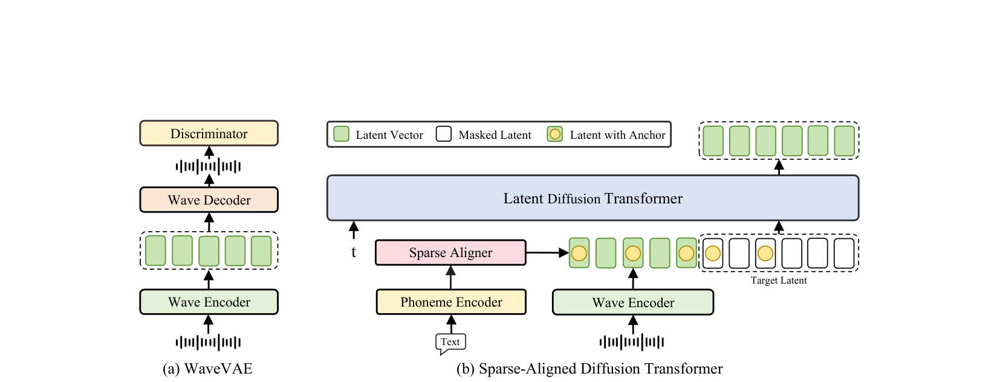
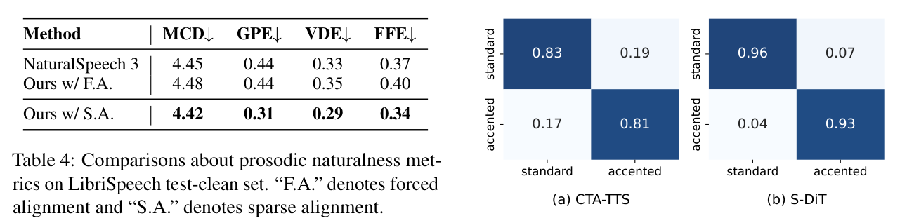
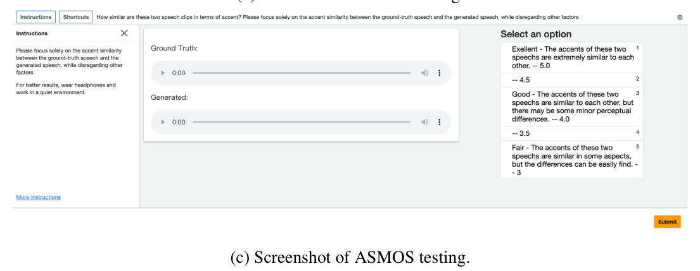
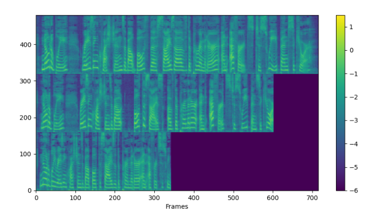
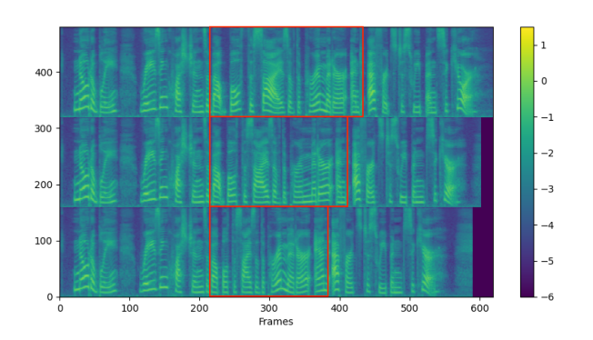
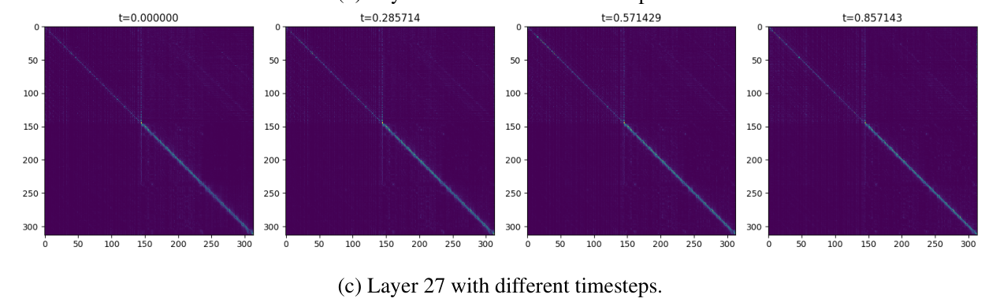

Ziyue Jiang1,2*, Yi Ren2, Ruiqi Li1,2, Shengpeng Ji1, Boyang Zhang1, Zhenhui Ye1, Chen Zhang2, Bai Jionghao1, Xiaoda Yang1, Jialong Zuo1, Yu Zhang1, Rui Liu3, Xiang Yin2, Zhou Zhao1 1Zhejiang University, 2ByteDance, 3Inner Mongolia University ziyuejiang341@gmail.com, zhaozhou@zju.edu.cn
摘要Abstract
While recent zero-shot text-to-speech (TTS) models have significantly improved speech quality and expressiveness, mainstream systems still suffer from issues related to speechtext alignment modeling: 1) models without explicit speech-text alignment modeling exhibit less robustness, especially for hard sentences in practical applications; 2) predefined alignment-based models suffer from naturalness constraints of forced alignments. This paper introduces MegaTTS 3, a TTS system featuring an innovative sparse alignment algorithm that guides the latent diffusion transformer (DiT). Specifically, we provide sparse alignment boundaries to MegaTTS 3 to reduce the difficulty of alignment without limiting the search space, thereby achieving high naturalness. Moreover, we employ a multi-condition classifier-free guidance strategy for accent intensity adjustment and adopt the piecewise rectified flow technique to accelerate the generation process. Experiments demonstrate that MegaTTS 3 achieves state-of-the-art zero-shot TTS speech quality and supports highly flexible control over accent intensity. Notably, our system can generate high-quality one-minute speech with only 8 sampling steps.
尽管近期的零样本文本转语音（TTS）模型显著提升了语音质量与表现力，主流系统仍受困于语音-文本对齐建模相关的问题：1）不做显式语音-文本对齐建模的模型鲁棒性较差，在实际应用中的难句上尤其如此；2）基于预定义对齐的模型则受制于强制对齐带来的自然度约束。本文提出 MegaTTS 3，一个采用创新稀疏对齐算法来引导潜在扩散 Transformer（DiT）的 TTS 系统。具体来说，我们为 MegaTTS 3 提供稀疏的对齐边界，在降低对齐学习难度的同时不限制搜索空间，从而实现高自然度。此外，我们采用多条件无分类器引导（classifier-free guidance）策略实现口音强度调节，并采用分段修正流（piecewise rectified flow）技术加速生成过程。实验表明，MegaTTS 3 达到了最先进的零样本 TTS 语音质量，并支持高度灵活的口音强度控制。值得注意的是，我们的系统仅需 8 步采样即可生成高质量的 1 分钟语音。
Audio samples are available at https://sditdemo. github.io/sditdemo/.
音频样例见 https://sditdemo.github.io/sditdemo/。
1 1 引言Introduction
In recent years, neural codec language models (Wang et al., 2023; Zhang et al., 2023; Song et al., 2024; Xin et al., 2024) and large-scale diffusion models (Shen et al., 2023; Matthew et al., 2023; Lee et al., 2024a; Eskimez et al., 2024; Ju et al., 2024; Yang et al., 2024d,b) have brought considerable advancements to the field of speech synthesis. Unlike traditional text-to-speech (TTS) systems (Shen et al., 2018; Jia et al., 2018; Li et al., 2019; Kim et al., 2020; Ren et al., 2019; Kim et al., *Intern at ByteDance.
近年来，神经 codec 语言模型（Wang et al., 2023; Zhang et al., 2023; Song et al., 2024; Xin et al., 2024）和大规模扩散模型（Shen et al., 2023; Matthew et al., 2023; Lee et al., 2024a; Eskimez et al., 2024; Ju et al., 2024; Yang et al., 2024d,b）为语音合成领域带来了可观的进步。与传统 TTS 系统（Shen et al., 2018; Jia et al., 2018; Li et al., 2019; Kim et al., 2020; Ren et al., 2019; Kim et al.,（此句句尾混入脚注「* Intern at ByteDance.」）
2021, 2022), these models are trained on largescale, multi-domain speech corpora, which contributes to notable improvements in the naturalness and expressiveness of synthesized audio. Given only seconds of speech prompt, they can synthesize identity-preserving speech in a zero-shot manner.
2021, 2022）不同，这些模型在大规模、多领域的语音语料上训练，使合成音频的自然度与表现力得到显著提升。仅给出几秒钟的语音提示（prompt），它们就能以零样本方式合成保持说话人身份的语音。
To generate high-quality speech with clear and expressive pronunciation, a TTS model must establish an alignment mapping from text to speech signals (Kim et al., 2020; Tan et al., 2021). However, from the perspective of speech-text alignment, current solutions suffer from the following issues:
为了生成发音清晰、富有表现力的高质量语音，TTS 模型必须建立从文本到语音信号的对齐映射（Kim et al., 2020; Tan et al., 2021）。然而，从语音-文本对齐的角度看，现有方案存在以下问题：
• Models with implicit speech-text alignment achieve the soft alignment paths through attention mechanisms (Wang et al., 2023; Chen et al., 2024a; Du et al., 2024). These models can be categorized into: 1) autoregressive codec language models (AR LM), which are inefficient and lack robustness. The lengthy discrete speech codes, which typically require a bit rate of 1.5 kbps (Kumar et al., 2024; Wu et al., 2024), impose a significant burden on these autoregressive language models; 2) diffusion-based models without explicit duration modeling (Lee et al., 2024a; Eskimez et al., 2024; Lovelace et al., 2023; Gao et al., 2023; Cámbara et al., 2024; Yang et al., 2024d,b), which significantly speeds up the speech generation process. However, when compared with methods that adopt forced alignment, these models exhibit a decline in speech intelligibility. Besides, these methods cannot provide fine-grained control over the duration of specific pronunciations and can only adjust the overall speech rate.
• 采用隐式语音-文本对齐的模型通过注意力机制获得软对齐路径（Wang et al., 2023; Chen et al., 2024a; Du et al., 2024）。这些模型可以分为：1）自回归 codec 语言模型（AR LM），其效率低下且缺乏鲁棒性。冗长的离散语音编码（通常需要 1.5 kbps 的码率（Kumar et al., 2024; Wu et al., 2024））给这些自回归语言模型带来了沉重负担；2）不做显式时长建模的扩散模型（Lee et al., 2024a; Eskimez et al., 2024; Lovelace et al., 2023; Gao et al., 2023; Cámbara et al., 2024; Yang et al., 2024d,b），它们显著加快了语音生成过程。然而，与采用强制对齐的方法相比，这些模型在语音可懂度上有所下降。此外，这些方法无法对特定发音的时长进行细粒度控制，只能调整整体语速。
• Predefined alignment-based methods have prosodic naturalness constraints of forced alignments.
• 基于预定义对齐的方法则受到强制对齐的韵律自然度约束。
During training, alignment paths (Ren et al., 2020; Kim et al., 2020) are directly introduced into their models (Matthew et al., 2023; Shen et al., 2023; Ju et al., 2024) to reduce the complexity of textto-speech generation, which achieves higher intelligibility. Nevertheless, they suffer from the following limitations: 1) predefined alignments constrain the model’s search space to produce more natural-sounding speech (Anastassiou et al., 2024; Chen et al., 2024a); 2) the overall naturalness is highly dependent on the performance of duration models.
在训练时，对齐路径（Ren et al., 2020; Kim et al., 2020）被直接引入模型（Matthew et al., 2023; Shen et al., 2023; Ju et al., 2024），以降低文本转语音生成的复杂度，从而获得更高的可懂度。然而，它们存在以下局限：1）预定义对齐限制了模型生成更自然语音的搜索空间（Anastassiou et al., 2024; Chen et al., 2024a）；2）整体自然度高度依赖时长模型的性能。
Intuitively, we can integrate the two aforementioned diffusion-based methods to pursue optimal performance.
直观地说，我们可以把上述两类基于扩散的方法结合起来，以追求最优性能。
To be specific, we propose a novel sparse speech-text alignment strategy to enhance the latent diffusion transformer (DiT), termed MegaTTS 3. In our approach, phoneme tokens are sparsely distributed within the corresponding forced alignment regions to provide coarse pronunciation information that is then refined by the latent DiT model. Experimental results demonstrate that MegaTTS 3 achieves nearly state-of-the-art speech intelligibility and speaker similarity on the LibriSpeech test-clean set (Panayotov et al., 2015) with only 8 sampling steps, while also exhibiting high speech naturalness. The main contributions of this work are summarized as follows:
具体来说，我们提出了一种新颖的稀疏语音-文本对齐策略来增强潜在扩散 Transformer（DiT），称为 MegaTTS 3。在我们的方法中，音素 token 被稀疏地分布在对应的强制对齐区域内，提供粗略的发音信息，再由潜在 DiT 模型加以细化。实验结果表明，MegaTTS 3 在 LibriSpeech test-clean 集（Panayotov et al., 2015）上仅用 8 步采样就取得了接近最先进的语音可懂度与说话人相似度，同时保持了很高的语音自然度。本工作的主要贡献总结如下：
• We design a sparse alignment enhanced latent diffusion transformer model, which effectively integrates the strengths of the two aforementioned speech-text alignment approaches.
• 我们设计了一种稀疏对齐增强的潜在扩散 Transformer 模型，有效融合了上述两类语音-文本对齐方法的优势。
Notably, our model also demonstrates greater robustness to duration prediction errors compared to methods with forced alignment.
值得注意的是，与采用强制对齐的方法相比，我们的模型对时长预测误差还表现出更强的鲁棒性。
• To achieve higher generation quality and more flexible control, we propose a multi-condition CFG strategy to adjust the guidance scales for speaker timbre and text content separately.
• 为了获得更高的生成质量和更灵活的控制，我们提出多条件 CFG 策略，分别调整说话人音色和文本内容的引导尺度。
Furthermore, we discover that the text guidance scale can also be used to modulate the intensity of personal accents, offering a new direction for enhancing speech expressiveness.
进一步地，我们发现文本引导尺度还可用于调制个人口音的强度，这为增强语音表现力提供了一个新方向。
• We successfully reduce the inference steps from 25 to 8 with the piecewise rectified flow (PeRFLow) technique, achieving highly efficient zero-shot TTS with minimal quality degradation. We also visualize the attention matrices across various layers of MegaTTS 3 and obtain insightful findings in Appendix F.
• 我们借助分段修正流（PeRFLow）技术成功地把推理步数从 25 步减少到 8 步，以极小的质量损失实现了高效的零样本 TTS。我们还对 MegaTTS 3 各层的注意力矩阵做了可视化，并在 Appendix F 中给出了一些有启发性的发现。
2 2 背景：零样本 TTSBackground Zero-shot TTS.
Zero-shot TTS (Casanova et al., 2022; Wang et al., 2023; Zhang et al., 2023; Shen et al., 2023; Matthew et al., 2023; Jiang et al., 2024; Liu et al., 2024b; Lee et al., 2024a; Li et al., 2024; Lee et al., 2023; Ju et al., 2024; Meng et al., 2024; Chen et al., 2024b) aims to synthesize unseen voices with speech prompts. Among them, neural codec language models (Chen et al., 2024a) are the first that can autoregressively synthesize speech that rivals human recordings in naturalness and expressiveness. However, they still face several challenges, such as the lossy compression in discrete audio tokenization and the time-consuming nature of autoregressive generation. To address these issues, some subsequent works explore solutions based on continuous vectors and non-autoregressive diffusion models (Shen et al., 2023; Matthew et al., 2023; Lee et al., 2024a; Eskimez et al., 2024; Yang et al., 2024d,b; Chen et al., 2024b). These works can be categorized into two main types: 1) the first type directly models speech-text alignments using attention mechanisms without explicit duration modeling (Lee et al., 2024a; Eskimez et al., 2024). Although these models perform well in terms of generation speed and quality, their robustness, especially in challenging cases, still requires enhancement. The second category (Shen et al., 2023; Matthew et al., 2023) utilizes predefined alignments to simplify alignment learning. However, the search space of the generated speech of these models is limited by predefined alignments. To address these limitations, we propose a sparse alignment mechanism to reduce the constraints of predefined alignment-based methods while also reducing the difficulty of speech-text alignment learning.
零样本 TTS（Casanova et al., 2022; Wang et al., 2023; Zhang et al., 2023; Shen et al., 2023; Matthew et al., 2023; Jiang et al., 2024; Liu et al., 2024b; Lee et al., 2024a; Li et al., 2024; Lee et al., 2023; Ju et al., 2024; Meng et al., 2024; Chen et al., 2024b）旨在借助语音提示合成未见过的声音。其中，神经 codec 语言模型（Chen et al., 2024a）是最早能自回归地合成在自然度与表现力上媲美真人录音的语音的模型。然而，它们仍面临若干挑战，例如离散音频 token 化的有损压缩，以及自回归生成耗时的问题。为了解决这些问题，一些后续工作探索了基于连续向量与非自回归扩散模型的方案（Shen et al., 2023; Matthew et al., 2023; Lee et al., 2024a; Eskimez et al., 2024; Yang et al., 2024d,b; Chen et al., 2024b）。这些工作可分为两大类：1）第一类直接用注意力机制建模语音-文本对齐，而不做显式时长建模（Lee et al., 2024a; Eskimez et al., 2024）。尽管这类模型在生成速度和质量上表现不错，其鲁棒性（尤其是在困难样本上）仍有待加强。第二类（Shen et al., 2023; Matthew et al., 2023）利用预定义对齐来简化对齐学习。然而，这些模型生成语音的搜索空间受到预定义对齐的限制。针对这些局限，我们提出稀疏对齐机制，既减轻预定义对齐方法的约束，又降低语音-文本对齐学习的难度。
口音 TTSAccented TTS.
While accented TTS is not yet mainstream in the field of speech synthesis, it offers valuable potential for customized TTS services, by enhancing the expressiveness of speech synthesis systems and improving listeners’ comprehension of speech content (Tan et al., 2021; Melechovsky et al., 2022; Badlani et al., 2023; Zhou et al., 2024; Shah et al., 2024; Ma et al., 2023; Inoue et al., 2024; Zhong et al., 2024). With the emergence of conversational AI systems, accented TTS technology has even broader application scenarios. In this paper, we focus on a specific task of accented TTS: adjusting the accent intensity of speakers to make them sound like native English speakers or Latent Vector Masked Latent Latent with Anchor Discriminator Wave Decoder Latent Diffusion Transformer Sparse Aligner t Target Latent Phoneme Encoder Wave Encoder Wave Encoder Text (a) WaveVAE (b) Sparse-Aligned Diffusion Transformer
尽管口音 TTS 尚未成为语音合成领域的主流方向，但它对定制化 TTS 服务很有价值：既能增强语音合成系统的表现力，也能帮助听众更好地理解语音内容（Tan et al., 2021; Melechovsky et al., 2022; Badlani et al., 2023; Zhou et al., 2024; Shah et al., 2024; Ma et al., 2023; Inoue et al., 2024; Zhong et al., 2024）。随着对话式 AI 系统的兴起，口音 TTS 技术有了更广阔的应用场景。本文聚焦口音 TTS 中的一个具体任务：调节说话人的口音强度，让他们听起来像以英语为母语的人，或像（此句句尾混入 Figure 1 的图中文字：Latent Vector Masked Latent Latent with Anchor Discriminator Wave Decoder Latent Diffusion Transformer Sparse Aligner t Target Latent Phoneme Encoder Wave Encoder Wave Encoder Text (a) WaveVAE (b) Sparse-Aligned Diffusion Transformer）

图Figure 1: (a) The WaveVAE model; (b) Overview of our model. We insert the sparse alignment anchors into the latent vector sequence to provide coarse alignment information. The transformer blocks in MegaTTS 3 will automatically build fine-grained alignment paths.
图 1：（a）WaveVAE 模型；（b）我们的模型总览。我们把稀疏对齐锚点插入潜在向量序列中，以提供粗略的对齐信息。MegaTTS 3 中的 Transformer 块会自动构建细粒度的对齐路径。
accented speakers who use English as a second language (Liu et al., 2024a). Unlike previous work, our approach does not require paired data or accurate accent labels; instead, it allows for flexible control over the accent intensity using the proposed multi-condition CFG mechanism. In addition, we describe the CFG mechanism used in zero-shot TTS systems in Appendix B.
把英语作为第二语言的带口音说话人（Liu et al., 2024a）。与以往工作不同，我们的方法不需要成对数据或精确的口音标签；相反，它借助提出的多条件 CFG 机制即可灵活控制口音强度。此外，我们在 Appendix B 中介绍了零样本 TTS 系统中使用的 CFG 机制。
3 3 方法Method
This section introduces MegaTTS 3. To begin with, we describe the architecture design of MegaTTS 3. Then, we provide detailed explanations of the sparse alignment mechanism, the piecewise rectified flow acceleration technique, and the multicondition classifier-free guidance strategy.
本节介绍 MegaTTS 3。首先，我们介绍 MegaTTS 3 的架构设计。随后，我们详细解释稀疏对齐机制、分段修正流加速技术和多条件无分类器引导策略。
3.1 3.1 架构：WaveVAEArchitecture WaveVAE.
As shown in Figure 1 (a), given a speech waveform s, the VAE encoder E encodes s into a latent vector z, and the wave decoder D reconstructs the waveform x = D(z) = D(E(s)). To reduce the computational burden of the model and simplify speech-text alignment learning, the encoder E downsamples the waveform by a factor of d in length.
如 Figure 1 (a) 所示，给定语音波形 s，VAE 编码器 E 把 s 编码为潜在向量 z，波形解码器 D 重建波形 x = D(z) = D(E(s))。为了降低模型的计算负担并简化语音-文本对齐学习，编码器 E 把波形在长度方向上下采样 d 倍。
The encoder E is similar to the one used in Ji et al. (2024), and the decoder D is based on Kong et al. (2020). We also adopt the multi-period discriminator (MPD), multiscale discriminator (MSD), and multi-resolution discriminator (MRD) (Kong et al., 2020; Jang et al., 2021) to model the high-frequency details in waveforms, which ensure perceptually highquality reconstructions. The training loss of the speech compression model can be formulated as
编码器 E 与 Ji et al.（2024）所用的编码器类似，解码器 D 基于 Kong et al.（2020）。我们还采用多周期判别器（MPD）、多尺度判别器（MSD）和多分辨率判别器（MRD）（Kong et al., 2020; Jang et al., 2021）对波形中的高频细节建模，保证感知上高质量的重建。语音压缩模型的训练损失可表述为
L = Lrec + LKL + LAdv, where Lrec = ∥s −ˆs∥2is the spectrogram reconstruction loss, LKL is the slight KL-penalty loss (Rombach et al., 2022), and LAdv is the LSGAN-styled adversarial loss (Mao et al., 2017). After training, a one-second speech clip can be encoded into 25 vector frames. For more details, please refer to Appendix A.1 and 4.5.
其中 Lrec 是频谱重建损失，LKL 是较小的 KL 惩罚损失（Rombach et al., 2022），LAdv 是 LSGAN 风格的对抗损失（Mao et al., 2017）。训练完成后，一段 1 秒的语音片段可被编码为 25 帧向量。更多细节请参见 Appendix A.1 与 4.5。
带掩码语音建模的潜在扩散 TransformerLatent Diffusion Transformer with Masked
Speech Modeling.
语音建模。（本句为章节标题「Latent Diffusion Transformer with Masked Speech Modeling」跨页截断的后半段）
The latent diffusion transformer is used to predict speech that matches the style of the given speaker and the content of the provided text. Given the random variables Z0 sampled from a standard Gaussian distribution π0 and Z1 sampled from the latent space given by the speech compression model with data density π1, we adopt the rectified flow Liu et al. (2022) to implicitly learn the transport map T, which yields Z1 := T(Z0). The rectified flow learns T by constructing the following ordinary differential equation (ODE):
潜在扩散 Transformer 用于预测符合给定说话人风格和给定文本内容的语音。给定从标准高斯分布 π0 采样的随机变量 Z0，以及从语音压缩模型给出的潜在空间（数据密度为 π1）采样的 Z1，我们采用修正流（rectified flow）（Liu et al., 2022）隐式地学习传输映射 T，使得 Z1 := T(Z0)。修正流通过构造如下常微分方程（ODE）来学习 T：dZt = v(Zt, t) dt，其中 t ∈[0, 1] 表示时间，v 是漂移力。
dZt = v(Zt, t) dt, (1)where t ∈[0, 1] denotes time and v is the drift force. Equation 1 converts Z0 from π0 to Z1 from π1. The drift force v drives the flow to follow the direction (Z1 −Z0). The latent diffusion transformer, parameterized by θ, can be trained by estimating v(Zt, t) with vθ(Zt, t) through minimizing the least squares loss with respect to the line directions (Z1 −Z0):
修正流通过构造如下常微分方程（ODE）来学习 T：dZt = v(Zt, t) dt，其中 t ∈[0, 1] 表示时间，v 是漂移力。公式 1 把来自 π0 的 Z0 转化为来自 π1 的 Z1。漂移力 v 驱使流沿着 (Z1 −Z0) 的方向行进。参数化为 θ 的潜在扩散 Transformer 通过用 vθ(Zt, t) 估计 v(Zt, t)、并对直线方向 (Z1 −Z0) 最小化最小二乘损失来训练：
Z 10E ∥(Z1 −Z0) −v(Zt, t)∥2 dt.
（本句为公式残块，接上方训练目标：）∫₀¹ E ∥(Z1 −Z0) −v(Zt, t)∥2 dt。
(2)min vWe use the standard transformer block from LLAMA (Dubey et al., 2024) as the basic structure for MegaTTS 3 and adopt the Rotary Position Embedding (RoPE) (Su et al., 2024) as the positional embedding. During training, we randomly divide the latent vector sequence into a prompt region zprompt and a masked target region ztarget, with the proportion of zprompt being γ ∼U(0.1, 0.9). We use vθ to predict the masked target vector ˆztarget conditioned on zprompt and the phoneme embedding p, denoted as vθ(ˆztarget|zprompt, p). The loss is calculated using only the masked region ztarget. MegaTTS 3 learns the average pronunciation from p and the specific characteristics such as timbre, accent, and prosody of the corresponding speaker from zprompt.
我们使用 LLAMA（Dubey et al., 2024）的标准 Transformer 块作为 MegaTTS 3 的基本结构，并采用旋转位置编码（RoPE）（Su et al., 2024）作为位置嵌入。训练时，我们把潜在向量序列随机划分为提示（prompt）区 zprompt 和掩码目标区 ztarget，zprompt 所占比例为 γ ∼U(0.1, 0.9)。我们用 vθ 在 zprompt 和音素嵌入 p 的条件下预测被掩码的目标向量 ẑtarget，记作 vθ(ẑtarget|zprompt, p)。损失只在掩码区域 ztarget 上计算。MegaTTS 3 从 p 中学习平均发音，从 zprompt 中学习对应说话人的音色、口音和韵律等具体特征。
3.2 3.2 稀疏对齐增强的潜在扩散 Transformer（MegaTTS 3）Sparse Alignment Enhanced Latent Diffusion Transformer (MegaTTS 3)
In this subsection, we describe the sparse alignment strategy as the foundation of MegaTTS 3, followed by the piecewise rectified flow and multi-condition CFG strategies to further enhance MegaTTS 3’s capacity.
在本小节中，我们首先介绍作为 MegaTTS 3 基础的稀疏对齐策略，随后介绍分段修正流和多条件 CFG 策略，以进一步增强 MegaTTS 3 的能力。
稀疏对齐策略Sparse Alignment Strategy.
Let’s first analyze the reasons behind the characteristics of different speech-text alignment modeling methods in depth. Implicitly modeling speech-text alignment is a relatively challenging task, which consequently leads to suboptimal speech intelligibility, particularly in hard cases. On the other hand, employing predefined hard alignment paths constrains the model’s search space to produce more naturalsounding speech.
我们先深入分析不同语音-文本对齐建模方法各自特性背后的原因。隐式建模语音-文本对齐是一项相对困难的任务，因此会导致可懂度不够理想，在困难样本上尤其如此。另一方面，使用预定义的硬对齐路径会限制模型生成更自然语音的搜索空间。
The characteristics of these systems motivate us to design an approach that combines the advantages of both: we first provide a rough alignment to MegaTTS 3 and then use attention mechanisms in Transformer blocks to construct the fine-grained implicit alignment path.
这些系统的特性促使我们设计一种结合两者优点的方法：先给 MegaTTS 3 提供一个粗略对齐，再利用 Transformer 块中的注意力机制构建细粒度的隐式对齐路径。
The visualizations of the implicit alignment paths are included in Appendix F. In specific, denote the latent speech vector sequence as z = [z1, z2, · · · , zn], the phoneme sequence as p = [p1, p2, · · · , pm], and the phoneme duration sequence as d = [d1, d2, · · · , dm], where n, m is the length of the sequence. The length of the speech vector that corresponds to a phoneme pi is the duration di. Given d = [2, 2, 3], the hard speech-text alignment path can be denoted as a = [p1, p1, p2, p2, p3, p3, p3]. To construct the rough alignment ˜a, we randomly retain only one anchor for each phoneme: ˜a = [M, p1, p2, M, M, M, P3], where M represents the mask token. ˜a is downsampled with convolution layers to match the length of the latent sequence z. Then, we directly concatenate the downsampled ˜a and z along the channel dimension. The anchors in ˜a provide MegaTTS 3 with approximate positional information for each phoneme, simplifying the learning process of speech-text alignment. At the same time, the rough alignment information does not limit MegaTTS 3’s search space and also enables fine-grained control over each phoneme’s duration.
隐式对齐路径的可视化结果见 Appendix F。具体来说，记潜在语音向量序列为 z = [z1, z2, · · · , zn]，音素序列为 p = [p1, p2, · · · , pm]，音素时长序列为 d = [d1, d2, · · · , dm]，其中 n、m 为序列长度。音素 pi 对应的语音向量长度即时长 di。给定 d = [2, 2, 3]，硬语音-文本对齐路径可表示为 a = [p1, p1, p2, p2, p3, p3, p3]。为构造粗略对齐 ã，我们对每个音素只随机保留一个锚点：ã = [M, p1, p2, M, M, M, P3]，其中 M 代表掩码 token。ã 经卷积层下采样，使其长度与潜在序列 z 匹配。然后，我们把下采样后的 ã 与 z 沿通道维直接拼接。ã 中的锚点为 MegaTTS 3 提供了每个音素的大致位置信息，简化了语音-文本对齐的学习过程。与此同时，粗略对齐信息并不限制 MegaTTS 3 的搜索空间，还能实现对每个音素时长的细粒度控制。
分段修正流加速Piecewise Rectified Flow Acceleration.
We adopt Piecewise Rectified Flow (PeRFlow) (Yan et al., 2024) to distill the pretrained MegaTTS 3 model into a more efficient generator. Although our MegaTTS 3 is non-autoregressive in terms of the time dimension, it requires multiple iterations to solve the Flow ODE. The number of iterations (i.e., number of function evaluations, NFE) has a great impact on inference efficiency, especially when the model scales up further. Therefore, we adopt the PeRFlow technique to further reduce NFE by segmenting the flow trajectories into multiple time windows. Applying reflow operations within these shortened time intervals, PeRFlow eliminates the need to simulate the full ODE trajectory for training data preparation, allowing it to be trained in real-time alongside large-scale real data during the training process. Given number of windows K, we divide the time t ∈[0, 1] into K time windows {(tk−1, tk]}K k=1. Then, we randomly sample k ∈{1, · · · , K} uniformly. We use the startpoint of the sampled time window ztk−1 = p 1 −σ2(tk−1)z1 + σ(tk−1)ϵ to solve the endpoint of the time window ˆztk = ϕθ(ztk−1, tk−1, tk), where ϵ ∼N(0, I) is the random noise, σ(t) is the noise schedule, and ϕθ is the ODE solver of the teacher model. Since ztk−1 and ˆztk is available, the student model ˆθ can be trained via the following objectives:
我们采用分段修正流（PeRFlow）（Yan et al., 2024）把预训练的 MegaTTS 3 模型蒸馏成一个更高效的生成器。尽管 MegaTTS 3 在时间维度上是非自回归的，它仍需多次迭代来求解 Flow ODE。迭代次数（即函数评估次数，NFE）对推理效率影响很大，尤其当模型规模进一步扩大时。因此，我们采用 PeRFlow 技术，通过把流轨迹分割为多个时间窗口来进一步降低 NFE。在这些缩短的时间区间内施加 reflow 操作，PeRFlow 无需在准备训练数据时模拟完整的 ODE 轨迹，因而可以在训练过程中与大规模真实数据一起实时训练。给定窗口数 K，我们把时间 t ∈[0, 1] 划分为 K 个时间窗口 {(tk−1, tk]}（k=1…K）。然后，我们从 {1, · · · , K} 中均匀随机采样一个 k。我们用所采样时间窗口的起点 ztk−1 = √（1 −σ2(tk−1)）z1 + σ(tk−1)ϵ 来求解该时间窗口的终点 ẑtk = ϕθ(ztk−1, tk−1, tk)，其中 ϵ ∼N(0, I) 为随机噪声，σ(t) 为噪声调度，ϕθ 为教师模型的 ODE 求解器。由于 ztk−1 和 ẑtk 均已可得，学生模型 θ̂ 可通过如下目标进行训练：
2 , (3)ℓ= vˆθ(zt, t) −ˆztk −ztk−1tk −tk−1where vˆθ is the estimated drift force with parameter ˆθ and t is uniformly sampled from (tk−1, tk]. We provide details of PeRFlow training for MegaTTS 3 in Appendix C.
其中 vθ̂ 是参数为 θ̂ 的漂移力估计，t 从 (tk−1, tk] 中均匀采样。MegaTTS 3 的 PeRFlow 训练细节见 Appendix C。
多条件无分类器引导（CFG）Multi-condition
Classifier-Free Guidance (CFG).
无分类器引导（CFG）。（本句为章节标题「Multi-condition Classifier-Free Guidance (CFG)」跨页截断的后半段）
We employ classifier-free guidance approach (Ho and Salimans, 2022) to steer the model gθ’s output towards the conditional generation gθ(zt, c) and away from the unconditional generation gθ(zt, ∅):
我们采用无分类器引导方法（Ho and Salimans, 2022），使模型 gθ 的输出趋向条件生成 gθ(zt, c)、远离无条件生成 gθ(zt, ∅)：
ˆgθ(zt, c) = gθ(zt, ∅) + α · [gθ(zt, c) −gθ(zt, ∅)] , (4)where c denotes the conditional state, ∅denotes the unconditional state, and α is the guidance scale selected based on experimental results. Unlike standard classifier-free guidance, MegaTTS 3’s conditional states c consist of two components: phoneme embeddings p and the speaker prompt zprompt. In the experiments, as the text guidance scale increases, we observe that the pronunciation changes according to the following pattern: 1) starting with improper pronunciation; 2) then shifting to pronouncing with the current speaker’s accent; 3) and finally approaching the standard pronunciation of the target language. The detailed experimental setup is described in Appendix K. This allows us to use the text guidance scale αtxt to control the accent intensity. At the same time, the speaker guidance scale αspk should be a relatively high value to ensure a high speaker similarity. Therefore, we adopt the multi-condition classifier-free guidance technique to separately control αtxt and αspk:
ĝθ(zt, c) = gθ(zt, ∅) + α · [gθ(zt, c) −gθ(zt, ∅)]，其中 c 表示条件状态，∅ 表示无条件状态，α 是依据实验结果选定的引导尺度。与标准的无分类器引导不同，MegaTTS 3 的条件状态 c 由两部分组成：音素嵌入 p 和说话人提示 zprompt。在实验中，随着文本引导尺度增大，我们观察到发音按如下规律变化：1）起初发音不恰当；2）随后转变为带当前说话人口音的发音；3）最终接近目标语言的标准发音。详细的实验设置见 Appendix K。这使得我们可以用文本引导尺度 αtxt 来控制口音强度。与此同时，说话人引导尺度 αspk 应取相对较高的值，以保证较高的说话人相似度。因此，我们采用多条件无分类器引导技术，分别控制 αtxt 和 αspk：
ˆgθ(zt, p, zprompt) =αspk [gθ(zt, p, zprompt) −gθ(zt, p, ∅)] + αtxt [gθ(zt, p, ∅) −gθ(zt, ∅, ∅)] + gθ(zt, ∅, ∅) (5)In training, we randomly drop condition zprompt with a probability of pspk = 0.10. Only when zprompt is dropped, we randomly drop condition p with a probability of 50%. Therefore, our model is able to handle all three types of conditional inputs described in Equation 5. We select the guidance scale αspk and αtxt based on experimental results.
ĝθ(zt, p, zprompt) =αspk [gθ(zt, p, zprompt) −gθ(zt, p, ∅)] + αtxt [gθ(zt, p, ∅) −gθ(zt, ∅, ∅)] + gθ(zt, ∅, ∅)。训练时，我们以 pspk = 0.10 的概率随机丢弃条件 zprompt。只有当 zprompt 被丢弃时，我们才会以 50% 的概率随机丢弃条件 p。因此，我们的模型能够处理公式 5 所描述的全部三类条件输入。我们依据实验结果选定引导尺度 αspk 与 αtxt。
4 4 实验Experiments
In this subsection, we describe the datasets, training, inference, and evaluation metrics. We provide the model configuration and detailed hyperparameter setting in Appendix A.1.
在本节中，我们介绍数据集、训练、推理和评测指标。模型配置与详细的超参数设置见 Appendix A.1。
4.1 4.1 实验设置：数据集Experimental setup Datasets.
We train MegaTTS 3 on the LibriLight (Kahn et al., 2020) dataset, which contains 60k hours of unlabeled speech derived from LibriVox audiobooks. All speech data are sampled at 16KHz. We transcribe the speeches using an internal ASR system and extract the predefined speech-text alignment using the external alignment tool (McAuliffe et al., 2017). We utilize three benchmark datasets: 1) the librispeech (Panayotov et al., 2015) test-clean set following NaturalSpeech 3 (Ju et al., 2024) for zero-shot TTS evaluation; 2) the LibriSpeech-PC test-clean set following F5- TTS (Chen et al., 2024b) for zero-shot TTS evaluation; 3) the L2-arctic dataset (Zhao et al., 2018) following (Melechovsky et al., 2022; Liu et al., 2024a) for accented TTS evaluation.
我们在 LibriLight（Kahn et al., 2020）数据集上训练 MegaTTS 3，该数据集包含来自 LibriVox 有声书的 60k 小时无标注语音。所有语音数据的采样率均为 16KHz。我们用一个内部 ASR 系统转写语音，并用外部对齐工具（McAuliffe et al., 2017）抽取预定义的语音-文本对齐。我们使用三个基准数据集：1）遵循 NaturalSpeech 3（Ju et al., 2024）的 LibriSpeech（Panayotov et al., 2015）test-clean 集，用于零样本 TTS 评测；2）遵循 F5-TTS（Chen et al., 2024b）的 LibriSpeech-PC test-clean 集，用于零样本 TTS 评测；3）遵循（Melechovsky et al., 2022; Liu et al., 2024a）的 L2-ARCTIC 数据集（Zhao et al., 2018），用于口音 TTS 评测。
训练与推理Training and Inference.
We train the WaveVAE model and MegaTTS 3 on 8 NVIDIA A100 GPUs. The batch sizes, optimizer settings, and learning rate schedules are described in Appendix A.1. It takes 2M steps for the WaveVAE model’s training and 1M steps for MegaTTS 3’s training until convergence. The pre-training of MegaTTS 3 requires 800k steps and PeRFlow distillation requires 200k steps.
我们在 8 张 NVIDIA A100 GPU 上训练 WaveVAE 模型和 MegaTTS 3。批大小、优化器设置和学习率调度见 Appendix A.1。WaveVAE 模型的训练需 2M 步，MegaTTS 3 的训练需 1M 步直至收敛。MegaTTS 3 的预训练需要 800k 步，PeRFlow 蒸馏需要 200k 步。
客观指标Objective Metrics.
1) For zero-shot TTS, we evaluate speech intelligibility using the word error rate (WER) and speaker similarity using SIM- O (Ju et al., 2024). To measure SIM-O, we utilize the WavLM-TDCNN speaker embedding model1 to calculate the cosine similarity score between the generated samples and the prompt. As SIM- R (Matthew et al., 2023) is not comparable across baselines using different acoustic tokenizers, we recommend focusing on SIM-O in our experiments. The similarity score is in the range of [−1, 1], where a higher value indicates greater similarity. In terms of WER, we use the publicly available HuBERT-Large model (Hsu et al., 2021), finetuned on the 960-hour LibriSpeech training set, to transcribe the generated speech. The WER is calculated by comparing the transcribed text to the original target text. All samples from the test set are used for the objective evaluation; 2) For accented TTS, we evaluate the Mel Cepstral Distortion (MCD) in dB level and the moments (standard deviation (σ), skewness (γ) and kurtosis (κ)) (Andreeva et al., 2014; Niebuhr and Skarnitzl, 2019) of the pitch distribution to evaluate whether the model accurately captures accent variance.
1）对于零样本 TTS，我们用词错误率（WER）评测语音可懂度，用 SIM-O（Ju et al., 2024）评测说话人相似度。为计算 SIM-O，我们使用 WavLM-TDCNN 说话人嵌入模型（原文脚注 1，代码链接见 Appendix A）计算生成样本与提示（prompt）之间的余弦相似度得分。由于 SIM-R（Matthew et al., 2023）在使用不同声学分词器的基线之间不可比，我们建议在我们的实验中重点关注 SIM-O。相似度得分取值范围为 [−1, 1]，数值越高表示相似度越大。在 WER 方面，我们使用公开的 HuBERT-Large 模型（Hsu et al., 2021）（在 960 小时 LibriSpeech 训练集上微调）来转写生成的语音。WER 通过比较转写文本与原始目标文本计算得到。测试集的全部样本都用于客观评测；2）对于口音 TTS，我们评测 dB 级的 Mel 倒谱失真（MCD），以及音高分布的各阶矩（标准差 σ、偏度 γ 和峰度 κ）（Andreeva et al., 2014; Niebuhr and Skarnitzl, 2019），以评估模型是否准确捕捉了口音差异。
主观指标Subjective Metrics.
We conduct the MOS (mean opinion score) evaluation on the test set to measure the audio naturalness via Amazon Mechanical Turk. We keep the text content and prompt speech consistent among different models to exclude other interference factors. We randomly choose 40 sam1https://github.com/microsoft/UniSpeech/tree/ main/downstreams/speaker_verification Model #Params Training Data SIM-O↑ SIM-R↑ WER↓ CMOS↑ SMOS↑ RTF↓ GT
我们在测试集上进行 MOS（平均意见分）评测以衡量音频自然度，平台为 Amazon Mechanical Turk。我们保持不同模型间的文本内容与提示语音一致，以排除其他干扰因素。我们随机抽取 40 个样（脚注 1：https://github.com/microsoft/UniSpeech/tree/main/downstreams/speaker_verification）。（表头：Model / #Params / Training Data / SIM-O↑ / SIM-R↑ / WER↓ / CMOS↑ / SMOS↑ / RTF↓——GT，后续照原文。）
- - 0.68 - 1.94% +0.12 3.92 -VALL-E 2∗ 0.4B LibriHeavy0.64 0.68 2.44% - - -VoiceBox† 0.4B Collected (60kh)0.64 0.67 2.03% -0.20 3.81 0.340DiTTo-TTS∗ 0.7B Collected (55kh)0.62 0.65 2.56% - - -NaturalSpeech 3† 0.5B LibriLight0.67 0.76 1.81% -0.10 3.95 0.296CosyVoice 0.4B Collected (172kh)0.62 - 2.24% -0.18 3.93 1.375MaskGCT 1.0B Emilia (100kh)0.69 - 2.63% - - -F5-TTS 0.3B Emilia (100kh)0.66 - 1.96% -0.12 3.96 0.307MegaTTS 3 0.3B LibriLight0.71 0.78 1.82% 0.00 3.98 0.188MegaTTS 3-accelerated 0.3B LibriLight0.70 0.78 1.86% -0.03 3.96 0.124Table 1: Zero-shot TTS results on the LibriSpeech test-clean set following NaturalSpeech 3 (Ju et al., 2024). ∗
表 1：遵循 NaturalSpeech 3（Ju et al., 2024）在 LibriSpeech test-clean 集上的零样本 TTS 结果。
| GT | - | 0.68 | - | 1.94% | +0.12 | 3.92 | - | ||
| VALL-E 2∗ | 0.4B | LibriHeavy | 0.64 | 0.68 | 2.44% | - | - | - | |
| VoiceBox† | 0.4B | Collected (60kh) | 0.64 | 0.67 | 2.03% | -0.20 | 3.81 | 0.340 | |
| DiTTo-TTS∗ | 0.7B | Collected (55kh) | 0.62 | 0.65 | 2.56% | - | - | - | |
| NaturalSpeech 3† | 0.5B | LibriLight | 0.67 | 0.76 | 1.81% | -0.10 | 3.95 | 0.296 | |
| CosyVoice | 0.4B | Collected (172kh) | 0.62 | - | 2.24% | -0.18 | 3.93 | 1.375 | |
| MaskGCT | 1.0B | Emilia (100kh) | 0.69 | - | 2.63% | - | - | - | |
| F5-TTS | 0.3B | Emilia (100kh) | 0.66 | - | 1.96% | -0.12 | 3.96 | 0.307 | |
| MegaTTS 3 | 0.3B | LibriLight | 0.71 | 0.78 | 1.82% | 0.00 | 3.98 | 0.188 | |
| MegaTTS 3-accelerated | 0.3B | LibriLight | 0.70 | 0.78 | 1.86% | -0.03 | 3.96 | 0.124 |
means the results are obtained from the paper. † means the results are obtained from the authors. #Params denotes the number of parameters. RTF denotes the real-time factor.
∗ 表示结果取自论文原文。† 表示结果由作者提供。#Params 表示参数数量。RTF 表示实时因子。
Model #Params SIM-O↑ WER↓ GT
表头：Model / #Params / SIM-O↑ / WER↓——GT（后续照原文）。
- 0.69 2.23%0.66 3.59%E2 TTS 0.3B0.69 2.95%0.66 2.42%0.70 2.31%Table 2: Zero-shot TTS results on the LibriSpeech-PC test-clean set following F5-TTS (Chen et al., 2024b). #Params denotes the number of parameters.
表 2：遵循 F5-TTS（Chen et al., 2024b）在 LibriSpeech-PC test-clean 集上的零样本 TTS 结果。#Params 表示参数数量。
ples from the test set of each dataset for the subjective evaluation, and each audio is listened to by at least 10 testers. We analyze the MOS in three aspects: CMOS (quality, clarity, naturalness, and high-frequency details), SMOS (speaker similarity in terms of timbre reconstruction and prosodic pattern), and ASMOS (accent similarity). We tell the testers to focus on one corresponding aspect and ignore the other aspect when scoring.
我们从每个数据集的测试集中随机选取 40 个样本用于主观评测，每段音频至少由 10 名测试者收听。我们从三个维度分析 MOS：CMOS（质量、清晰度、自然度和高频细节）、SMOS（音色重建与韵律模式上的说话人相似度）和 ASMOS（口音相似度）。我们要求测试者在打分时只关注对应的维度并忽略其他维度。
4.2 4.2 零样本语音合成评测结果：基线Results of Zero-Shot Speech Synthesis Evaluation Baselines.
We compare the zero-shot speech synthesis performance of MegaTTS 3 with 11 strong baselines, including: 1) VALL-E 2 (Chen et al., 2024a); 2) VoiceBox (Matthew et al., 2023); 3) DiTTo-TTS (Lee et al., 2024a); 4) NaturalSpeech 3 (Ju et al., 2024); 5) CosyVoice (Du et al., 2024); 6) MaskGCT (Wang et al., 2024); 7) F5- TTS (Chen et al., 2024b); 8) E2 TTS (Eskimez et al., 2024). Explanation and details of the selected baseline systems are provided in Appendix A.4.
我们把 MegaTTS 3 的零样本语音合成性能与 11 个强基线进行比较，包括：1）VALL-E 2（Chen et al., 2024a）；2）VoiceBox（Matthew et al., 2023）；3）DiTTo-TTS（Lee et al., 2024a）；4）NaturalSpeech 3（Ju et al., 2024）；5）CosyVoice（Du et al., 2024）；6）MaskGCT（Wang et al., 2024）；7）F5-TTS（Chen et al., 2024b）；8）E2 TTS（Eskimez et al., 2024）。所选基线系统的说明与细节见 Appendix A.4。
分析Analysis
As shown in Table 1, we can see that 1) MegaTTS 3 achieves state-of-the-art SIM-O, SMOS, and WER scores, comparable to NaturalSpeech 3 (the counterpart with forced alignment), and significantly surpasses other baselines without explicit alignments. The improved SIM-O and SMOS suggest that the proposed sparse alignment effectively simplifies the text-to-speech mapping challenge like predefined forced duration information, allowing the model to focus more on learning timbre information. And the improved WER indicates that MegaTTS 3 also enjoys strong robustness; 2) MegaTTS 3 significantly surpasses all baselines in terms of CMOS, demonstrating the effectiveness of the proposed sparse alignment strategy; 3) After the PeRFlow acceleration, the student model of MegaTTS 3 shows on par quality with the teacher model and enjoys fast inference speed. We also conduct the experiments on the LibriSpeech-PC test-clean set provided by F5-TTS and the results are shown in Table 2, which also demonstrates that our method achieves state-of-theart performance in terms of speaker similarity and speech intelligibility. The duration controllability of MegaTTS 3 is verified in Appendix E. In the demo page, we also demonstrate that our method can maintain high naturalness even when the performance of the duration predictor is suboptimal (while MegaTTS 3 with forced alignment fails).
如 Table 1 所示，可以看到：1）MegaTTS 3 取得了最先进的 SIM-O、SMOS 和 WER 分数，与 NaturalSpeech 3（采用强制对齐的对照系统）相当，并显著超越其他不做显式对齐的基线。SIM-O 和 SMOS 的提升表明，所提的稀疏对齐像预定义的强制时长信息一样，有效简化了文本到语音的映射难题，使模型能把更多精力放在学习音色信息上。而 WER 的提升表明 MegaTTS 3 同时具备较强的鲁棒性；2）MegaTTS 3 在 CMOS 上显著超越所有基线，证明了所提稀疏对齐策略的有效性；3）经 PeRFlow 加速后，MegaTTS 3 的学生模型展现出与教师模型相当的质量，并享有更快的推理速度。我们还在 F5-TTS 提供的 LibriSpeech-PC test-clean 集上做了实验，结果见 Table 2，同样表明我们的方法在说话人相似度和语音可懂度上达到了最先进的性能。MegaTTS 3 的时长可控性在 Appendix E 中得到验证。在演示页面上，我们还展示了即使时长预测器的性能不理想，我们的方法也能保持高自然度（而采用强制对齐的 MegaTTS 3 则会失败）。
4.3 4.3 韵律自然度实验Experiments of Prosodic Naturalness
We also measure the objective metrics MCD, SSIM, STOI, GPE, VDE, and FFE following InstructTTS (Yang et al., 2024c) to evaluate the prosodic naturalness of our method. The results are presented in Table 4. Specifically, our method with sparse alignment (Ours w/ S.A.) achieves the best performance across all metrics, with an MCD of 4.42, GPE of 0.31, VDE of 0.29, and FFE of 0.34. These results indicate a significant improvement in prosodic naturalness compared to the baseModel MCD (dB) ↓
我们还按 InstructTTS (Yang et al., 2024c) 测量 MCD、SSIM、STOI、GPE、VDE、FFE 等客观指标，以评估方法的韵律自然度。结果见表 4。具体而言，带稀疏对齐的方法（Ours w/ S.A.）在所有指标上最佳：MCD 4.42、GPE 0.31、VDE 0.29、FFE 0.34。这些结果表明相对基（表头：Model / MCD (dB) ↓，后续照原文）有显著的韵律自然度提升。
σ ↑ γ ↓ κ ↓ASMOS ↑ CMOS ↑ SMOS ↑ GT- 45.1 0.591 0.783 4.03 +0.09 3.95CTA-TTS5.98 41.1 0.602 0.799 3.72 -0.60 3.645.69 42.3 0.601 0.790 3.84 +0.00 3.89Table 3: The objective and subjective experimental results for accented TTS. MCD (dB) denotes the Mel Cepstral Distortion at the dB level. σ, γ, and κ are the standard deviation, skewness, and kurtosis of the pitch distribution.
表 3：口音 TTS 的客观与主观实验结果。MCD (dB) 表示 dB 级的 Mel 倒谱失真。σ、γ 和 κ 分别为音高分布的标准差、偏度和峰度。
| GT | - | 45.1 | 0.591 | 0.783 | 4.03 | +0.09 | 3.95 |
| CTA-TTS | 5.98 | 41.1 | 0.602 | 0.799 | 3.72 | -0.60 | 3.64 |
| MegaTTS 3 | 5.69 | 42.3 | 0.601 | 0.790 | 3.84 | +0.00 | 3.89 |
Method MCD↓ GPE↓ VDE↓ FFE↓ NaturalSpeech 3
（本句为 Table 4 表头及首行残块：）Method、MCD↓、GPE↓、VDE↓、FFE↓；NaturalSpeech 3：4.45、0.44、0.33、0.37；Ours w/ F.A.（接下行）。
Table 4: Comparisons about prosodic naturalness metrics on LibriSpeech test-clean set. “F.A.” denotes forced alignment and “S.A.” denotes sparse alignment.
表 4：LibriSpeech test-clean 集上韵律自然度指标的对比。「F.A.」表示强制对齐，「S.A.」表示稀疏对齐。
| standard | standard | |||||||||
|---|---|---|---|---|---|---|---|---|---|---|
| 0.83 | 0.19 | 0.96 | 0.07 | |||||||
| NaturalSpeech 3 | 4.45 | 0.44 | 0.33 | 0.37 | ||||||
| Ours w/ F.A. | 4.48 | 0.44 | 0.35 | 0.40 | ||||||
| Ours w/ S.A. | 4.42 | 0.31 | 0.29 | 0.34 | accented | accented | ||||
| 0.17 | 0.81 | 0.04 | 0.93 |
line NaturalSpeech 3 and our method with forced alignment (Ours w/ F.A.), further validating the effectiveness of our sparse alignment strategy. Our method provides a noval and effective solution for speech synthesis applications that require high robustness and exceptional expressiveness, such as audiobook narration and virtual assistants.
即与 NaturalSpeech 3 以及我们采用强制对齐的方法（Ours w/ F.A.）相比均有提升，进一步验证了稀疏对齐策略的有效性。我们的方法为需要高鲁棒性和出色表现力的语音合成应用（如有声书旁白和虚拟助手）提供了一种新颖而有效的解决方案。
4.4 4.4 口音 TTS 结果Results of Accented TTS
In this subsection, we evaluate the accented TTS performance of our model on the L2-ARCTIC dataset (Zhao et al., 2018). This corpus includes recordings from non-native speakers of English whose first languages are Hindi, Korean, etc. In this experiment, we focus on verifying whether our model and baseline can synthesize natural speech with different accent types (standard English or English with specific accents) while maintaining consistent vocal timbre. We compare our MegaTTS 3 model with CTA-TTS (Liu et al., 2024a). More details of the baseline model are provided in Appendix A.5. 1) First, we evaluate whether the models can synthesize high-quality speeches with accents. As shown in Table 3, our MegaTTS 3 model significantly outperforms the CTA-TTS baseline in terms of the subjective accent similarity MOS core, the MCD (dB) values, and the statistical moments (σ, γ, and κ) of pitch distributions. These results demonstrate the superior accent learning capability of MegaTTS 3 compared to the baseline system. Besides, the MegaTTS 3 model achieves higher CMOS and SMOS scores compared to CTA-TTS, indicating a significant improvement in speech quality and speaker similarity; 2) Secondly, we evaluate whether the models can accurately control standard accented standard accented
在本小节中，我们在 L2-ARCTIC 数据集（Zhao et al., 2018）上评测模型的口音 TTS 性能。该语料库收录了母语为印地语、韩语等的非英语母语说话人的录音。本实验重点验证：在保持音色一致的前提下，我们的模型和基线能否合成不同口音类型（标准英语或带特定口音的英语）的自然语音。我们把 MegaTTS 3 模型与 CTA-TTS（Liu et al., 2024a）进行比较。基线模型的更多细节见 Appendix A.5。1）首先，我们评测模型能否合成带口音的高质量语音。如 Table 3 所示，我们的 MegaTTS 3 模型在主观口音相似度 MOS 得分、MCD (dB) 数值及音高分布的各阶矩（σ、γ 和 κ）上均显著优于 CTA-TTS 基线。这些结果表明，与基线系统相比，MegaTTS 3 具有更强的口音学习能力。此外 MegaTTS 3 的 CMOS 与 SMOS 均高于 CTA-TTS，说明语音质量与说话人相似度显著提升；2）其次评估模型能否精确控制「标准口音」（standard accented）。（图：standard accented 0.83/0.19/0.96/0.07/0.17/0.81/0.04/0.93，(a) CTA-TTS 与 (b) S-DiT 对比。）
standard accented standard accented (a) CTA-TTS (b) S-DiT
此外 MegaTTS 3 的 CMOS 与 SMOS 均高于 CTA-TTS，说明语音质量与说话人相似度显著提升；2）其次评估模型能否精确控制「标准口音」（standard accented）。（图：standard accented 0.83/0.19/0.96/0.07/0.17/0.81/0.04/0.93，(a) CTA-TTS 与 (b) S-DiT 对比。）

图Figure 2: The confusion matrices between the perceived and intended accent categories of synthesized speech. The X-axis and Y-axis represent the intended and perceived categories, respectively.
图 2：合成语音的感知口音类别与预期口音类别之间的混淆矩阵。X 轴与 Y 轴分别表示预期类别与感知类别。
the accent types of the generated speeches. We follow CTA-TTS to conduct the intensity classification experiment (Liu et al., 2024a). At run-time, we generate speeches with two accent types, and the listeners are instructed to classify the perceived accent categories, including “standard” and “accented”. Figure 2 shows that our MegaTTS 3 significantly surpasses CTA-TTS in terms of accent controllability.
生成语音的口音类型。我们遵循 CTA-TTS 的做法开展口音强度分类实验（Liu et al., 2024a）。在运行时，我们生成两种口音类型的语音，并指示听众对感知到的口音类别进行分类，包括「标准」和「带口音」。Figure 2 显示，我们的 MegaTTS 3 在口音可控性上显著超越 CTA-TTS。
4.5 4.5 WaveVAE 评测Evaluation of WaveVAE
First, we evaluate the reconstruction quality of the WaveVAE model, with results presented in Table 5. We report the objective metrics, including Perceptual Evaluation of Speech Quality (PESQ), Virtual Speech Quality Objective Listener (ViSQOL), and Mel-Cepstral Distortion (MCD). We select the following codec models as baselines: 1) EnCodec (Dé- fossez et al., 2022), a representative and pioneering work in the field of speech codec; 2) DAC (Kumar et al., 2024), a high-bitrate audio codec model with high reconstruction quality; 3) WavTokenizer (Ji et al., 2024), a low-bitrate speech codec model that focuses more on perceptual reconstruction quality; 4) X-codec2 (Ye et al., 2025), a low-bitrate speech codec model, leveraging the representations of a pre-trained model to further enhance overall quality. The results demonstrates that, despite applying higher compression rate, our solution achieves superior performance on various reconstruction metrics, such as MCD and ViSQOL.
首先，我们评测 WaveVAE 模型的重建质量，结果见 Table 5。我们报告了客观指标，包括语音质量感知评估（PESQ）、虚拟语音质量客观听众（ViSQOL）和 Mel 倒谱失真（MCD）。我们选取以下 codec 模型作为基线：1）EnCodec（Défossez et al., 2022），语音 codec 领域具有代表性的开创性工作；2）DAC（Kumar et al., 2024），重建质量很高的高码率音频 codec 模型；3）WavTokenizer（Ji et al., 2024），更注重感知重建质量的低码率语音 codec 模型；4）X-codec2（Ye et al., 2025），利用预训练模型表征进一步提升整体质量的低码率语音 codec 模型。结果表明，尽管我们的方案采用了更高的压缩率，它在 MCD、ViSQOL 等多项重建指标上仍取得了更优的性能。
Models Tokens/s Latent Layer Type PESQ↑ STOI↑ ViSQOL↑ MCD↓ UTMOS↑ Encodec
表头：Models / Tokens/s / Latent Layer Type / PESQ↑ / STOI↑ / ViSQOL↑ / MCD↓ / UTMOS↑——Encodec（后续照原文）。
Table 5: Comparison of the reconstruction quality. The sampling rate are set to 16 kHz. Bold and Underline values indicate the best and second best results. “Tokens/s” means how many tokens a one-second speech will be compressed into.
表 5：重建质量对比。采样率均设为 16 kHz。加粗与下划线数值分别表示最优与次优结果。「Tokens/s」表示 1 秒语音被压缩为多少个 token。
| Encodec | 600 | 8 | Discrete | 3.16 | 0.94 | 4.31 | 1.63 | 3.07 |
| DAC | 450 | 9 | Discrete | 4.13 | 0.97 | 4.68 | 1.05 | 4.01 |
| WavTokenizer | 75 | 1 | Discrete | 2.55 | 0.88 | 3.83 | 1.99 | 4.07 |
| X-codec2 | 50 | 1 | Discrete | 3.03 | 0.91 | 4.12 | 1.72 | 4.13 |
| WaveVAE | 25 | 1 | Continuous | 3.84 | 0.96 | 4.71 | 1.03 | 4.10 |
Setting SIM-O↑ WER↓ Ours
（表格行：Setting × SIM-O↑ × WER↓——Ours 0.71/1.82%；w/ Encodec 0.56/2.24%；w/ DAC 0.64/1.93%。）
0.71 1.82%w/ Encodec0.56 2.24%w/ DAC0.64 1.93%Table 6: Comparison of zero-shot TTS performance of MegaTTS 3 using different speech compression models on the LibriSpeech test-clean set.
表 6：MegaTTS 3 使用不同语音压缩模型时在 LibriSpeech test-clean 集上的零样本 TTS 性能对比。
Setting SIM-O↑ WER↓ CMOS↑ SMOS↑ Ours
（表格行：Setting × SIM-O↑ × WER↓ × CMOS↑ × SMOS↑——Ours 0.71/1.82%/0.00/3.94；w/ F.A.（后续照原文）。）
0.71 1.82% 0.00 3.94w/ F.A.
（本句为 Table 4 表头及首行残块：）Method、MCD↓、GPE↓、VDE↓、FFE↓；NaturalSpeech 3：4.45、0.44、0.33、0.37；Ours w/ F.A.（接下行）。
0.70 1.80% -0.17 3.94w/o A.
（表格行）0.70/1.80%/-0.17/3.94；w/o A.（后续照原文）。
0.67 2.14% -0.12 3.88w/ CFG0.68 1.79% -0.02 3.89w/o CFG0.43 6.85% -0.56 3.35Table 7: Ablation studies of alignment strategies and CFG mechanisms on the LibriSpeech test-clean set.
表 7：LibriSpeech test-clean 集上对齐策略与 CFG 机制的消融研究。
Second, to demonstrate the impact of different speech compression models on the overall performance of the TTS system, we extracted the latents from Encodec and DAC, respectively, for training our MegaTTS 3 model. We report the experimental results in Table 6. It can be seen that our method outperforms “w/ DAC” and “w/ Encodec”, due to the fact that the latent space of our speech compression model is more compact (only 25 tokens per second). The results demonstrate the importance of our WaveVAE, a high-compression, high-reconstruction-quality speech codec model, for TTS systems. This conclusion is also verified by a previous work (Lee et al., 2024a), which shows compact target latents facilitate learning in diffusion models.
其次，为了展示不同语音压缩模型对 TTS 系统整体性能的影响，我们分别用 Encodec 和 DAC 提取的潜在表征来训练我们的 MegaTTS 3 模型。实验结果见 Table 6。可以看到，我们的方法优于「w/ DAC」和「w/ Encodec」，原因是我们的语音压缩模型的潜在空间更紧凑（每秒仅 25 个 token）。这些结果证明了我们的 WaveVAE——一个高压缩率、高重建质量的语音 codec 模型——对 TTS 系统的重要性。此前一项工作（Lee et al., 2024a）也验证了这一结论：紧凑的目标潜在表征有助于扩散模型的学习。
4.6 4.6 消融研究Ablation Studies
We test the following four settings: 1) w/ FA, which replaces the sparse alignment in MegaTTS 3 with forced alignment used in (Matthew et al., 2023; Shen et al., 2023); 2) w/o A., we do not use the predefined alignments and modeling the duration information implicitly; 3) w/ CFG, we use the standard CFG following the common practice in Diffusionbased TTS; 4) w/o CFG, we do not use the CFG mechanism. All tests follow the experimental setup described in Section 4.2. The results are shown in Table 7. For settings 1) and 2), it can be observed that both forced alignment and sparse alignment can enhance the performance of speech synthesis models. However, compared to forced alignment, sparse alignment does not constrain the model’s search space, leading to a prosodic naturalness (see Section 4.3). Therefore, the sparse alignment strategy achieves +0.17 CMOS compared to the forced alignment strategy. For setting 3), compared with the standard CFG, our multi-condition CFG performs slightly better as it allows for flexible control over the weights between the text prompt and the speaker prompt. Setting 4) proves that the CFG mechanism is crucial for MegaTTS 3. Additionally, we visualize the attention score matrices from different transformer layers in MegaTTS 3 in Appendix F, leading to some interesting observations.
我们测试以下四种设置：1）w/ FA：把 MegaTTS 3 中的稀疏对齐替换为（Matthew et al., 2023; Shen et al., 2023）所用的强制对齐；2）w/o A.：不使用预定义对齐，隐式建模时长信息；3）w/ CFG：遵循基于扩散的 TTS 的常见做法使用标准 CFG；4）w/o CFG：不使用 CFG 机制。所有测试均遵循 Section 4.2 描述的实验设置。结果见 Table 7。对设置 1）和 2），可以观察到强制对齐和稀疏对齐都能增强语音合成模型的性能。然而，与强制对齐相比，稀疏对齐不约束模型的搜索空间，从而带来更好的韵律自然度（见 Section 4.3）。因此，稀疏对齐策略相比强制对齐策略取得了 +0.17 的 CMOS 提升。对设置 3），与标准 CFG 相比，我们的多条件 CFG 表现略好，因为它允许灵活控制文本提示与说话人提示之间的权重。设置 4）证明 CFG 机制对 MegaTTS 3 至关重要。此外，我们在 Appendix F 中可视化了 MegaTTS 3 不同 Transformer 层的注意力分数矩阵，并得到了一些有趣的观察。
5 5 结论Conclusions
In this paper, we introduce MegaTTS 3, a zero-shot TTS framework that leverages novel sparse alignment boundaries to ease the difficulty of alignment learning while retaining the naturalness of the generated speeches. This strategy allows MegaTTS 3 to combine the strengths of methods with both implicit alignments and predefined hard alignments. Additionally, we employ the PeRFlow technique to further accelerate the generation process and design a multi-condition CFG strategy to offer more flexible control over accents. Experimental results show that MegaTTS 3 achieves state-of-the-art zero-shot TTS speech quality while maintaining a more efficient pipeline. Moreover, the sparse alignment strategy also shows enhanced prosodic naturalness and higher robustness against a suboptimal duration predictor. Due to space constraints, further discussions are provided in the appendix.
本文提出 MegaTTS 3，一个零样本 TTS 框架，它利用新颖的稀疏对齐边界降低对齐学习的难度，同时保持生成语音的自然度。这一策略使 MegaTTS 3 能够结合隐式对齐方法与预定义硬对齐方法两者的优点。此外，我们采用 PeRFlow 技术进一步加速生成过程，并设计了多条件 CFG 策略，以提供更灵活的口音控制。实验结果表明，MegaTTS 3 在保持更高效流程的同时，取得了最先进的零样本 TTS 语音质量。此外，稀疏对齐策略还展现出更强的韵律自然度，以及面对不理想时长预测器时更高的鲁棒性。受篇幅所限，更多讨论见附录。
局限性Limitations
In this section, we discuss the limitations of the proposed method and outline potential strategies for addressing them in future research.
在本节中，我们讨论所提方法的局限性，并给出未来研究中解决这些问题的潜在策略。
• Language Coverage. Although our model currently supports both English and Chinese, there are far more languages in the world. We plan to incorporate additional training data from a wider range of languages and apply adaptation-based techniques, such as LoRA tuning (Hu et al., 2021), to enhance speech quality for low-resource languages.
• 语言覆盖。尽管我们的模型目前同时支持英语和中文，世界上的语言远不止这些。我们计划纳入更多语种的训练数据，并采用基于适配的技术（如 LoRA 微调（Hu et al., 2021））来提升低资源语言的语音质量。
• Function Coverage. We can make MegaTTS 3 more user-friendly by enabling it to generate speech in various styles according to text descriptions through instruction-based finetuning. We can further fine-tune MegaTTS 3 on the paralinguistic corpus, allowing it to generate speech that is closer to a natural human style.
• 功能覆盖。通过基于指令的微调，让 MegaTTS 3 能根据文本描述生成各种风格的语音，可以使它更易用。我们还可以在副语言语料上进一步微调 MegaTTS 3，使其生成更接近自然人风格的语音。
ReferencesReferences
Philip Anastassiou, Jiawei Chen, Jitong Chen, Yuanzhe Chen, Zhuo Chen, Ziyi Chen, Jian Cong, Lelai Deng, Chuang Ding, Lu Gao, et al. 2024. Seed-tts: A family of high-quality versatile speech generation models.
arXiv preprint arXiv:2406.02430.
Bistra Andreeva, Gra˙zyna Demenko, Bernd Möbius, Frank Zimmerer, Jeanin Jügler, and Magdalena Oleskowicz-Popiel. 2014. Differences of pitch profiles in germanic and slavic languages. In Fifteenth Annual Conference of the International Speech Communication Association.
Rosana Ardila, Megan Branson, Kelly Davis, Michael Henretty, Michael Kohler, Josh Meyer, Reuben Morais, Lindsay Saunders, Francis M Tyers, and Gregor Weber. 2019. Common voice: A massivelymultilingual speech corpus.
arXiv preprint arXiv:1912.06670.
Rohan Badlani, Rafael Valle, Kevin J Shih, Joao Felipe Santos, Siddharth Gururani, and Bryan Catanzaro.
2023. Multilingual multiaccented multispeaker tts with radtts. arXiv preprint arXiv:2301.10335.
Guillermo Cámbara, Patrick Lumban Tobing, Mikolaj Babianski, Ravichander Vipperla, Duo Wang Ron Shmelkin, Giuseppe Coccia, Orazio Angelini, Arnaud Joly, Mateusz Lajszczak, and Vincent Pollet.
2024. Mapache: Masked parallel transformer for advanced speech editing and synthesis. In ICASSP 2024-2024 IEEE International Conference on Acoustics, Speech and Signal Processing (ICASSP), pages 10691–10695. IEEE.
Edresson Casanova, Julian Weber, Christopher D Shulby, Arnaldo Candido Junior, Eren Gölge, and Moacir A Ponti. 2022. Yourtts: Towards zero-shot multi-speaker tts and zero-shot voice conversion for everyone. In International Conference on Machine Learning, pages 2709–2720. PMLR.
Guoguo Chen, Shuzhou Chai, Guanbo Wang, Jiayu Du, Wei-Qiang Zhang, Chao Weng, Dan Su, Daniel Povey, Jan Trmal, Junbo Zhang, et al. 2021. Gigaspeech: An evolving, multi-domain asr corpus with 10,000 hours of transcribed audio. arXiv preprint arXiv:2106.06909.
Sanyuan Chen, Shujie Liu, Long Zhou, Yanqing Liu, Xu Tan, Jinyu Li, Sheng Zhao, Yao Qian, and Furu Wei. 2024a. Vall-e 2: Neural codec language models are human parity zero-shot text to speech synthesizers. arXiv preprint arXiv:2406.05370.
Yushen Chen, Zhikang Niu, Ziyang Ma, Keqi Deng, Chunhui Wang, Jian Zhao, Kai Yu, and Xie Chen.
2024b.
F5-tts: A fairytaler that fakes fluent and faithful speech with flow matching. arXiv preprint arXiv:2410.06885.
Alexandre Défossez, Jade Copet, Gabriel Synnaeve, and Yossi Adi. 2022. High fidelity neural audio compression. arXiv preprint arXiv:2210.13438.
Zhihao Du, Qian Chen, Shiliang Zhang, Kai Hu, Heng Lu, Yexin Yang, Hangrui Hu, Siqi Zheng, Yue Gu, Ziyang Ma, et al. 2024. Cosyvoice: A scalable multilingual zero-shot text-to-speech synthesizer based on supervised semantic tokens. arXiv preprint arXiv:2407.05407.
Abhimanyu Dubey, Abhinav Jauhri, Abhinav Pandey, Abhishek Kadian, Ahmad Al-Dahle, Aiesha Letman, Akhil Mathur, Alan Schelten, Amy Yang, Angela Fan, et al. 2024. The llama 3 herd of models. arXiv preprint arXiv:2407.21783.
Sefik Emre Eskimez, Xiaofei Wang, Manthan Thakker, Canrun Li, Chung-Hsien Tsai, Zhen Xiao, Hemin Yang, Zirun Zhu, Min Tang, Xu Tan, et al. 2024.
E2 tts: Embarrassingly easy fully non-autoregressive zero-shot tts. arXiv preprint arXiv:2406.18009.
Yuan Gao, Nobuyuki Morioka, Yu Zhang, and Nanxin Chen. 2023. E3 tts: Easy end-to-end diffusion-based text to speech.
In 2023 IEEE Automatic Speech Recognition and Understanding Workshop (ASRU), pages 1–8. IEEE.
Jonathan Ho and Tim Salimans. 2022.
Classifierfree diffusion guidance.
arXiv preprint arXiv:2207.12598.
Wei-Ning Hsu, Benjamin Bolte, Yao-Hung Hubert Tsai, Kushal Lakhotia, Ruslan Salakhutdinov, and Abdelrahman Mohamed. 2021. Hubert: Self-supervised speech representation learning by masked prediction of hidden units. IEEE/ACM Transactions on Audio, Speech, and Language Processing, 29:3451–3460.
Edward J Hu, Yelong Shen, Phillip Wallis, Zeyuan Allen-Zhu, Yuanzhi Li, Shean Wang, Lu Wang, and Weizhu Chen. 2021.
Lora: Low-rank adaptation of large language models.
arXiv preprint arXiv:2106.09685.
Sho Inoue, Shuai Wang, Wanxing Wang, Pengcheng Zhu, Mengxiao Bi, and Haizhou Li. 2024. Macst: Multi-accent speech synthesis via text transliteration for accent conversion.
arXiv preprint arXiv:2409.09352.
Won Jang, Dan Lim, Jaesam Yoon, Bongwan Kim, and Juntae Kim. 2021. Univnet: A neural vocoder with multi-resolution spectrogram discriminators for high-fidelity waveform generation. arXiv preprint arXiv:2106.07889.
Shengpeng Ji, Ziyue Jiang, Wen Wang, Yifu Chen, Minghui Fang, Jialong Zuo, Qian Yang, Xize Cheng, Zehan Wang, Ruiqi Li, et al. 2024.
Wavtokenizer: an efficient acoustic discrete codec tokenizer for audio language modeling. arXiv preprint arXiv:2408.16532.
Ye Jia, Yu Zhang, Ron Weiss, Quan Wang, Jonathan Shen, Fei Ren, Patrick Nguyen, Ruoming Pang, Ignacio Lopez Moreno, Yonghui Wu, et al. 2018. Transfer learning from speaker verification to multispeaker text-to-speech synthesis. Advances in neural information processing systems, 31.
Ziyue Jiang, Jinglin Liu, Yi Ren, Jinzheng He, Zhenhui Ye, Shengpeng Ji, Qian Yang, Chen Zhang, Pengfei Wei, Chunfeng Wang, et al. 2024. Mega-tts 2: Boosting prompting mechanisms for zero-shot speech synthesis. In The Twelfth International Conference on Learning Representations.
Zeqian Ju, Yuancheng Wang, Kai Shen, Xu Tan, Detai Xin, Dongchao Yang, Yanqing Liu, Yichong Leng, Kaitao Song, Siliang Tang, et al. 2024.
Naturalspeech 3: Zero-shot speech synthesis with factorized codec and diffusion models.
arXiv preprint arXiv:2403.03100.
Jacob Kahn, Morgane Rivière, Weiyi Zheng, Evgeny Kharitonov, Qiantong Xu, Pierre-Emmanuel Mazaré, Julien Karadayi, Vitaliy Liptchinsky, Ronan Collobert, Christian Fuegen, et al. 2020. Libri-light: A benchmark for asr with limited or no supervision.
In ICASSP 2020-2020 IEEE International Conference on Acoustics, Speech and Signal Processing (ICASSP), pages 7669–7673. IEEE.
Heeseung Kim, Sungwon Kim, and Sungroh Yoon.
2022.Guided-tts: A diffusion model for text-tospeech via classifier guidance. In International Conference on Machine Learning, pages 11119–11133. PMLR.
Jaehyeon Kim, Sungwon Kim, Jungil Kong, and Sungroh Yoon. 2020. Glow-tts: A generative flow for text-to-speech via monotonic alignment search. Advances in Neural Information Processing Systems,
33:8067–8077.Jaehyeon Kim, Jungil Kong, and Juhee Son. 2021.
Conditional variational autoencoder with adversarial learning for end-to-end text-to-speech. In International Conference on Machine Learning, pages 5530–5540. PMLR.
Jungil Kong, Jaehyeon Kim, and Jaekyoung Bae. 2020.
Hifi-gan: Generative adversarial networks for efficient and high fidelity speech synthesis. Advances in Neural Information Processing Systems, 33:17022–
17033.Rithesh Kumar, Prem Seetharaman, Alejandro Luebs, Ishaan Kumar, and Kundan Kumar. 2024.
Highfidelity audio compression with improved rvqgan. Advances in Neural Information Processing Systems,
36.Keon Lee, Dong Won Kim, Jaehyeon Kim, and Jaewoong Cho. 2024a. Ditto-tts: Efficient and scalable zero-shot text-to-speech with diffusion transformer.
arXiv preprint arXiv:2406.11427.
Sang-Hoon Lee, Ha-Yeong Choi, Seung-Bin Kim, and Seong-Whan Lee. 2023. Hierspeech++: Bridging the gap between semantic and acoustic representation of speech by hierarchical variational inference for zero-shot speech synthesis. arXiv preprint arXiv:2311.12454.
Yeonghyeon Lee, Inmo Yeon, Juhan Nam, and Joon Son Chung. 2024b. Voiceldm: Text-to-speech with environmental context. In ICASSP 2024-2024 IEEE International Conference on Acoustics, Speech and Signal Processing (ICASSP), pages 12566–12571.
IEEE.
Naihan Li, Shujie Liu, Yanqing Liu, Sheng Zhao, and Ming Liu. 2019. Neural speech synthesis with transformer network. In Proceedings of the AAAI conference on artificial intelligence, volume 33, pages
6706–6713.Yinghao Aaron Li, Cong Han, Vinay Raghavan, Gavin Mischler, and Nima Mesgarani. 2024. Styletts 2: Towards human-level text-to-speech through style diffusion and adversarial training with large speech language models. Advances in Neural Information Processing Systems, 36.
Rui Liu, Berrak Sisman, Guanglai Gao, and Haizhou Li.
2024a. Controllable accented text-to-speech synthesis with fine and coarse-grained intensity rendering. IEEE/ACM Transactions on Audio, Speech, and Language Processing.
Xingchao Liu, Chengyue Gong, and Qiang Liu. 2022.
Flow straight and fast: Learning to generate and transfer data with rectified flow.
arXiv preprint arXiv:2209.03003.
Zhijun Liu, Shuai Wang, Sho Inoue, Qibing Bai, and Haizhou Li. 2024b. Autoregressive diffusion transformer for text-to-speech synthesis. arXiv preprint arXiv:2406.05551.
Steven R Livingstone and Frank A Russo. 2018. The ryerson audio-visual database of emotional speech and song (ravdess): A dynamic, multimodal set of facial and vocal expressions in north american english.
PloS one, 13(5):e0196391.
Philipos C Loizou. 2011. Speech quality assessment.
In Multimedia analysis, processing and communications, pages 623–654. Springer.
Justin Lovelace, Soham Ray, Kwangyoun Kim, Kilian Q Weinberger, and Felix Wu. 2023. Simple-tts: End-toend text-to-speech synthesis with latent diffusion.
Linhan Ma, Yongmao Zhang, Xinfa Zhu, Yi Lei, Ziqian Ning, Pengcheng Zhu, and Lei Xie. 2023. Accentvits: accent transfer for end-to-end tts. In National Conference on Man-Machine Speech Communication, pages 203–214. Springer.
Xudong Mao, Qing Li, Haoran Xie, Raymond YK Lau, Zhen Wang, and Stephen Paul Smolley. 2017. Least squares generative adversarial networks. In Proceedings of the IEEE international conference on computer vision, pages 2794–2802.
Le Matthew, Vyas Apoorv, Shi Bowen, Karrer Brian, Sari Leda, Moritz Rashel, Williamson Mary, Manohar Vimal, Adi Yossi, Mahadeokar Jay, and Hsu Wei-Ning. 2023. Voicebox: Text-guided multilingual universal speech generation at scale.
Michael McAuliffe, Michaela Socolof, Sarah Mihuc, Michael Wagner, and Morgan Sonderegger. 2017.
Montreal forced aligner: Trainable text-speech alignment using kaldi. In Interspeech, volume 2017, pages
498–502.Jan Melechovsky, Ambuj Mehrish, Berrak Sisman, and Dorien Herremans. 2022. Accented text-to-speech synthesis with a conditional variational autoencoder.
arXiv preprint arXiv:2211.03316.
Lingwei Meng, Long Zhou, Shujie Liu, Sanyuan Chen, Bing Han, Shujie Hu, Yanqing Liu, Jinyu Li, Sheng Zhao, Xixin Wu, et al. 2024. Autoregressive speech synthesis without vector quantization. arXiv preprint arXiv:2407.08551.
Oliver Niebuhr and Radek Skarnitzl. 2019. Measuring a speaker’s acoustic correlates of pitch–but which?
a contrastive analysis based on perceived speaker charisma.
In Proceedings of 19th International Congress of Phonetic Sciences.
Vassil Panayotov, Guoguo Chen, Daniel Povey, and Sanjeev Khudanpur. 2015. Librispeech: an asr corpus based on public domain audio books. In 2015 IEEE international conference on acoustics, speech and signal processing (ICASSP), pages 5206–5210.
IEEE.
Puyuan Peng, Po-Yao Huang, Shang-Wen Li, Abdelrahman Mohamed, and David Harwath. 2024. Voicecraft: Zero-shot speech editing and text-to-speech in the wild. arXiv preprint arXiv:2403.16973.
Yi Ren, Chenxu Hu, Xu Tan, Tao Qin, Sheng Zhao, Zhou Zhao, and Tie-Yan Liu. 2020.
Fastspeech 2: Fast and high-quality end-to-end text to speech. arXiv preprint arXiv:2006.04558.
Yi Ren, Yangjun Ruan, Xu Tan, Tao Qin, Sheng Zhao, Zhou Zhao, and Tie-Yan Liu. 2019. Fastspeech: Fast, robust and controllable text to speech. Advances in neural information processing systems, 32.
Robin Rombach, Andreas Blattmann, Dominik Lorenz, Patrick Esser, and Björn Ommer. 2022.
Highresolution image synthesis with latent diffusion models. In Proceedings of the IEEE/CVF Conference on Computer Vision and Pattern Recognition, pages
10684–10695.Neil Shah, Saiteja Kosgi, Vishal Tambrahalli, S Neha, Anil Nelakanti, and Vineet Gandhi. 2024. Parrottts: Text-to-speech synthesis exploiting disentangled selfsupervised representations. In Findings of the Association for Computational Linguistics: EACL 2024, pages 79–91.
Jonathan Shen, Ruoming Pang, Ron J Weiss, Mike Schuster, Navdeep Jaitly, Zongheng Yang, Zhifeng Chen, Yu Zhang, Yuxuan Wang, Rj Skerrv-Ryan, et al. 2018. Natural tts synthesis by conditioning wavenet on mel spectrogram predictions. In 2018 IEEE international conference on acoustics, speech and signal processing (ICASSP), pages 4779–4783.
IEEE.
Kai Shen, Zeqian Ju, Xu Tan, Yanqing Liu, Yichong Leng, Lei He, Tao Qin, Sheng Zhao, and Jiang Bian.
2023. Naturalspeech 2: Latent diffusion models are natural and zero-shot speech and singing synthesizers. arXiv preprint arXiv:2304.09116.
Yakun Song, Zhuo Chen, Xiaofei Wang, Ziyang Ma, and Xie Chen. 2024. Ella-v: Stable neural codec language modeling with alignment-guided sequence reordering. arXiv preprint arXiv:2401.07333.
Jianlin Su, Murtadha Ahmed, Yu Lu, Shengfeng Pan, Wen Bo, and Yunfeng Liu. 2024. Roformer: Enhanced transformer with rotary position embedding.
Neurocomputing, 568:127063.
Xu Tan, Tao Qin, Frank Soong, and Tie-Yan Liu. 2021.
A survey on neural speech synthesis. arXiv preprint arXiv:2106.15561.
Chengyi Wang, Sanyuan Chen, Yu Wu, Ziqiang Zhang, Long Zhou, Shujie Liu, Zhuo Chen, Yanqing Liu, Huaming Wang, Jinyu Li, et al. 2023. Neural codec language models are zero-shot text to speech synthesizers. arXiv preprint arXiv:2301.02111.
Yuancheng Wang, Haoyue Zhan, Liwei Liu, Ruihong Zeng, Haotian Guo, Jiachen Zheng, Qiang Zhang, Xueyao Zhang, Shunsi Zhang, and Zhizheng Wu.
2024.Maskgct: Zero-shot text-to-speech with masked generative codec transformer. arXiv preprint arXiv:2409.00750.
Haibin Wu, Xuanjun Chen, Yi-Cheng Lin, Kai-wei Chang, Ho-Lam Chung, Alexander H Liu, and Hungyi Lee. 2024. Towards audio language modeling-an overview. arXiv preprint arXiv:2402.13236.
Detai Xin, Xu Tan, Kai Shen, Zeqian Ju, Dongchao Yang, Yuancheng Wang, Shinnosuke Takamichi, Hiroshi Saruwatari, Shujie Liu, Jinyu Li, et al. 2024.
Rall-e: Robust codec language modeling with chainof-thought prompting for text-to-speech synthesis. arXiv preprint arXiv:2404.03204.
Hanshu Yan, Xingchao Liu, Jiachun Pan, Jun Hao Liew, Qiang Liu, and Jiashi Feng. 2024. Perflow: Piecewise rectified flow as universal plug-and-play accelerator. arXiv preprint arXiv:2405.07510.
An Yang, Baosong Yang, Binyuan Hui, Bo Zheng, Bowen Yu, Chang Zhou, Chengpeng Li, Chengyuan Li, Dayiheng Liu, Fei Huang, et al. 2024a. Qwen2 technical report. arXiv preprint arXiv:2407.10671.
Dongchao Yang, Rongjie Huang, Yuanyuan Wang, Haohan Guo, Dading Chong, Songxiang Liu, Xixin Wu, and Helen Meng. 2024b. Simplespeech 2: Towards simple and efficient text-to-speech with flow-based scalar latent transformer diffusion models. arXiv preprint arXiv:2408.13893.
Dongchao Yang, Songxiang Liu, Rongjie Huang, Chao Weng, and Helen Meng. 2024c. Instructtts: Modelling expressive tts in discrete latent space with natural language style prompt. IEEE/ACM Transactions on Audio, Speech, and Language Processing.
Dongchao Yang, Dingdong Wang, Haohan Guo, Xueyuan Chen, Xixin Wu, and Helen Meng. 2024d.
Simplespeech: Towards simple and efficient text-tospeech with scalar latent transformer diffusion models. arXiv preprint arXiv:2406.02328.
Jinhyeok Yang, Junhyeok Lee, Hyeong-Seok Choi, Seunghun Ji, Hyeongju Kim, and Juheon Lee. 2024e.
Dualspeech: Enhancing speaker-fidelity and textintelligibility through dual classifier-free guidance. arXiv preprint arXiv:2408.14423.
Zhen Ye, Xinfa Zhu, Chi-Min Chan, Xinsheng Wang, Xu Tan, Jiahe Lei, Yi Peng, Haohe Liu, Yizhu Jin, Zheqi DAI, et al. 2025. Llasa: Scaling train-time and inference-time compute for llama-based speech synthesis. arXiv preprint arXiv:2502.04128.
Heiga Zen, Viet Dang, Rob Clark, Yu Zhang, Ron J Weiss, Ye Jia, Zhifeng Chen, and Yonghui Wu. 2019.
Libritts: A corpus derived from librispeech for textto-speech. arXiv preprint arXiv:1904.02882.
Binbin Zhang, Hang Lv, Pengcheng Guo, Qijie Shao, Chao Yang, Lei Xie, Xin Xu, Hui Bu, Xiaoyu Chen, Chenchen Zeng, et al. 2022. Wenetspeech: A 10000+ hours multi-domain mandarin corpus for speech recognition. In ICASSP 2022-2022 IEEE International Conference on Acoustics, Speech and Signal Processing (ICASSP), pages 6182–6186. IEEE.
Ziqiang Zhang, Long Zhou, Chengyi Wang, Sanyuan Chen, Yu Wu, Shujie Liu, Zhuo Chen, Yanqing Liu, Huaming Wang, Jinyu Li, et al. 2023. Speak foreign languages with your own voice: Cross-lingual neural codec language modeling.
arXiv preprint arXiv:2303.03926.
Guanlong Zhao, Sinem Sonsaat, Alif Silpachai, Ivana Lucic, Evgeny Chukharev-Hudilainen, John Levis, and Ricardo Gutierrez-Osuna. 2018. L2-arctic: A non-native english speech corpus. In Proc. Interspeech, pages 2783–2787.
Jinzuomu Zhong, Korin Richmond, Zhiba Su, and Siqi Sun. 2024.
Accentbox: Towards highfidelity zero-shot accent generation. arXiv preprint arXiv:2409.09098.
Xuehao Zhou, Mingyang Zhang, Yi Zhou, Zhizheng Wu, and Haizhou Li. 2024. Multi-scale accent modeling with disentangling for multi-speaker multi-accent tts synthesis. arXiv preprint arXiv:2406.10844.
A Detailed Experimental SettingsDetailed Experimental Settings
A.1 Model ConfigurationModel Configuration
• The WaveVAE model consists of a VAE encoder, a wave decoder, and discriminators; The VAE encoder follows the architecture used in (Ji et al., 2024). The wave decoder consists of a convolutional upsampler and a Hifi-GAN decoder (Kong et al., 2020). The latent channel size is set to 32. The weight of the KL loss is set to 1 × 10−3, which only imposes a slight KL penalty on the learned latent. In training, we use batches of fixed length, consisting of 72,000 wavform frames, with a batch size set to 40 for each GPU. We use the Adam optimizer with a learning rate
• WaveVAE 模型由 VAE 编码器、波形解码器和判别器组成；VAE 编码器沿用（Ji et al., 2024）所用的架构。波形解码器由一个卷积上采样器和一个 Hifi-GAN 解码器（Kong et al., 2020）组成。潜在通道数设为 32。KL 损失的权重设为 1 × 10−3，只对学到的潜在表征施加轻微的 KL 惩罚。训练中我们使用固定长度的批次，每批含 72,000 个波形帧，每张 GPU 的批大小设为 40。我们使用 Adam 优化器，学习率为 1 × 10−4，β1 = 0.9，β2 = 0.999，预热 10K 步。
of 1 × 10−4, β1 = 0.9, β2 = 0.999, and 10Kwarmup steps.
我们使用 Adam 优化器，学习率为 1 × 10−4，β1 = 0.9，β2 = 0.999，预热 10K 步。
• The MegaTTS 3 model use the standard transformer block from LLAMA (Dubey et al., 2024) as the basic structure, which comprises a 24-layer Transformer with 16 attention heads and 1024 embedding dimensions. It contains 339M parameters in total. We adopt the Rotary Position Embedding (RoPE) (Su et al., 2024) as the positional embedding following the common practice in LLAMA implementations. For simplicity, we do not use the phoneme encoder and style encoder like previous works. We only use a linear projection layer to transform these features to the same dimension. During training, we use 8 A100 80GB GPUs with a batch size of 10K latent frames per GPU for 1M steps. We use the Adam optimizer with a learning rate of
• MegaTTS 3 模型使用 LLAMA（Dubey et al., 2024）的标准 Transformer 块作为基本结构，由 24 层 Transformer 组成，含 16 个注意力头和 1024 维嵌入。模型总共包含 339M 个参数。我们遵循 LLAMA 实现中的常见做法，采用旋转位置编码（RoPE）（Su et al., 2024）作为位置嵌入。为简单起见，我们不像以往工作那样使用音素编码器和风格编码器。我们只用一个线性投影层把这些特征变换到同一维度。训练时，我们使用 8 张 A100 80GB GPU，每张 GPU 的批大小为 10K 潜在帧，共训练 1M 步。我们使用 Adam 优化器，学习率为 1 × 10−4，β1 = 0.9，β2 = 0.999，预热 10K 步。
5 × 10−5, β1 = 0.9, β2 = 0.999, and 10Kwarmup steps. In zero-shot TTS experiments, we set the text guidance scale αtxt and the speaker guidance scale αspk to 2.5 and 3.5, respectively. In accented TTS experiments, we set αspk = 6.5, αtxt = 1.5 to generate the accented speech and set αspk = 2.0, αtxt = 5.0 to generate the speech with standard English.
我们使用 Adam 优化器，学习率为 1 × 10−4，β1 = 0.9，β2 = 0.999，预热 10K 步。在零样本 TTS 实验中，我们把文本引导尺度 αtxt 和说话人引导尺度 αspk 分别设为 2.5 和 3.5。在口音 TTS 实验中，我们设 αspk = 6.5、αtxt = 1.5 来生成带口音的语音，设 αspk = 2.0、αtxt = 5.0 来生成标准英语语音。
A.2 Random SeedsRandom Seeds
We ran objective experiments 10 times with 10 different random seeds and obtained the averaged results. The chosen random seeds are [4475, 5949,
随机种子：我们用 10 个不同的随机种子跑了 10 次客观实验并取平均结果。所选随机种子为 [4475, 5949, 6828, 6744, 3954, 3962, 6837, 1237, 3824, 3163]。
6828, 6744, 3954, 3962, 6837, 1237, 3824, 3163].A.3 Sampling StrategySampling Strategy
For MegaTTS 3, we applied the Euler sampler with a fixed step size following the common practice in flow ODE sampling. We use 25 and 8 sampling steps for MegaTTS 3 and MegaTTS 3-accelerated, respectively.
采样策略：对 MegaTTS 3，我们遵循流 ODE 采样的常见做法，采用固定步长的 Euler 采样器。MegaTTS 3 和 MegaTTS 3-accelerated 分别使用 25 步和 8 步采样。
A.4 Details about Zero-Shot TTS BaselinesDetails about Zero-Shot TTS Baselines
In this subsection, we provide the details about the baselines in our zero-shot TTS experiments:
零样本 TTS 基线细节：本小节介绍零样本 TTS 实验中各基线的细节：
• VALL-E 2 (Chen et al., 2024a), based on VALL-E, introduces Repetition Aware Sampling to stabilize the decoding process and proposes the Grouped Code Modeling to effectively address the challenges of long sequence modeling.
• VALL-E 2（Chen et al., 2024a）基于 VALL-E，引入重复感知采样（Repetition Aware Sampling）来稳定解码过程，并提出分组编码建模（Grouped Code Modeling）以有效应对长序列建模的挑战。
• VoiceBox (Matthew et al., 2023) is a nonautoregressive flow-matching model designed to infill mel-spectrograms based on provided speech context and text. We obtained the samples by contacting the authors.
• VoiceBox（Matthew et al., 2023）是一个非自回归的流匹配模型，旨在根据给定的语音上下文和文本对 Mel 频谱图进行补全填充。我们联系作者获得了其样本。
• DiTTo-TTS (Lee et al., 2024a) addresses the challenge of text-speech alignment via crossattention mechanisms with the prediction of the total length of speech representations. We directly obtain the results of objective evaluations from their paper.
• DiTTo-TTS（Lee et al., 2024a）通过带语音表征总长度预测的交叉注意力机制来应对文本-语音对齐的挑战。我们直接从其论文中获取客观评测结果。
• NaturalSpeech 3 (Ju et al., 2024) designs a neural codec with factorized vector quantization (FVQ) to disentangle speech waveform into subspaces of content, prosody, timbre, and acoustic details and propose a factorized diffusion model to generate attributes in each subspace following its corresponding prompt.
• NaturalSpeech 3（Ju et al., 2024）设计了带因子化向量量化（FVQ）的神经 codec，把语音波形解耦为内容、韵律、音色和声学细节等子空间，并提出因子化扩散模型，按各子空间对应的提示分别生成各属性。
We obtained the samples by contacting the authors.
我们联系作者获得了其样本。
• CosyVoice (Du et al., 2024) utilizes an LLM for text-to-token generation and a conditional flow matching model for token-to-speech synthesis. We use the official code and the model snapshot named “CosyVoice-300M” in our experiments2.
• CosyVoice（Du et al., 2024）用一个 LLM 做文本到 token 的生成，并用一个条件流匹配模型做 token 到语音的合成。我们在实验中使用其官方代码和名为「CosyVoice-300M」的模型快照（见脚注 2）。
• MaskGCT (Wang et al., 2024) proposes a fully non-autoregressive codec-based TTS model that eliminates the need for explicit alignment information between text and speech supervision, as well as phone-level duration prediction. We directly obtain the results of objective evaluations from their paper.
• MaskGCT（Wang et al., 2024）提出一个完全非自回归的 codec 化 TTS 模型，无需文本与语音监督之间的显式对齐信息，也无需音素级时长预测。我们直接从其论文中获取客观评测结果。
• F5-TTS (Chen et al., 2024b) proposes a fully non-autoregressive text-to-speech system based on flow matching with Diffusion Transformer (DiT). We use the official code and pretrained model in our experiments3.
• F5-TTS（Chen et al., 2024b）提出一个基于扩散 Transformer（DiT）流匹配的完全非自回归文本转语音系统。我们在实验中使用其官方代码和预训练模型（见脚注 3）。
• E2 TTS (Eskimez et al., 2024) proposes an easy non-autoregressive zero-shot TTS system, that offers human-level naturalness and state-of-the-art speaker similarity and intelligibility. We use the code implemented by F5-TTS authors in our experiments4.
• E2 TTS（Eskimez et al., 2024）提出一个简洁的非自回归零样本 TTS 系统，提供人类水平的自然度以及最先进的说话人相似度与可懂度。我们在实验中使用 F5-TTS 作者实现的代码（见脚注 4）。
The evaluation is conducted on a server with 1 NVIDIA V100 GPU and batch size 1. RTF denotes the real-time factor, i.e., the seconds required for the system (together with the vocoder) to synthesize one-second audio.
评测在一台配备 1 张 NVIDIA V100 GPU 的服务器上进行，批大小为 1。RTF 表示实时因子，即系统（连同声码器）合成 1 秒音频所需的秒数。
A.5 Details about the Accented TTS BaselineDetails about the Accented TTS Baseline
CTA-TTS (Liu et al., 2024a) is a TTS framework that uses a phoneme recognition model to quantify 2https://github.com/FunAudioLLM/CosyVoice 3https://github.com/SWivid/F5-TTS 4https://github.com/SWivid/F5-TTS the accent intensity in phoneme level for accent intensity control. CTA-TTS first trains the phoneme recognition model on the standard pronunciation LibriSpeech dataset, and then uses the output probability distribution of the model to assess the accent intensity and create accent labels on the accented L2Arctic dataset. These labels were input into the TTS model to enable control over accent intensity.
口音 TTS 基线细节：CTA-TTS（Liu et al., 2024a）是一个 TTS 框架，用音素识别模型在音素级量化口音强度，从而进行口音强度控制。（本句与脚注粘连：脚注 2 为 https://github.com/FunAudioLLM/CosyVoice，脚注 3 为 https://github.com/SWivid/F5-TTS，脚注 4 为 https://github.com/SWivid/F5-TTS）CTA-TTS 先在标准发音的 LibriSpeech 数据集上训练音素识别模型，然后用该模型的输出概率分布评估口音强度，并在带口音的 L2-ARCTIC 数据集上构造口音标签。这些标签被输入 TTS 模型，以实现口音强度控制。
Systems like CTA-TTS require precise accent annotations during training, so we trained them on the L2-ARCTIC dataset. However, our model does not require accent annotations and learns different accent patterns from large-scale data, using only the multi-condition CFG mechanism to achieve accent intensity control. Therefore, we directly compare the zero-shot results of our model with the baselines, which is a more challenging task.
像 CTA-TTS 这样的系统在训练时需要精确的口音标注，因此我们在 L2-ARCTIC 数据集上训练它们。然而，我们的模型不需要口音标注，而是从大规模数据中学习不同的口音模式，仅用多条件 CFG 机制即可实现口音强度控制。因此，我们直接用模型的零样本结果与基线比较，这是一个更具挑战性的任务。
A.6 Details in Subjective EvaluationsDetails in Subjective Evaluations
We conduct evaluations of audio quality, speaker similarity, and accent similarity on Amazon Mechanical Turk (MTurk). We inform the participants that the data will be utilized for scientific research purposes. For each dataset, 40 samples are randomly selected from the test set, and the TTS systems are then used to generate corresponding audio samples. Each audio sample is listened to by a minimum of 10 listeners. For CMOS, following the approach of Loizou (2011), listeners are asked to compare pairs of audio generated by systems A and B and indicate their preference between the two. They are then asked to choose one of the following scores: 0 indicating no difference, 1 indicating a slight difference, 2 indicating a significant difference and 3 indicating a very large difference. We instruct listeners to “Please focus on speech quality, particularly in terms of clarity, naturalness, and high-frequency details, while disregarding other factors”. For SMOS and ASMOS, each participant is instructed to rate the sentence on a 1-5 Likert scale based on their subjective judgment. For speaker similarity evaluations (SMOS), we instruct listeners to “Please focus solely on the timbre and prosodic similarity between the reference speech and the generated speech, while disregarding differences in content, grammar, audio quality, and other factors”. For accent similarity evaluations (AS- MOS), we instruct listeners to “Please focus solely on the accent similarity between the ground-truth speech and the generated speech, while disregarding other factors”. The screenshots of instructions for testers are shown in Figure 3. Additionally, we insert audio samples with known quality levels (e.g., reference recordings with no artifacts or intentionally corrupted audio with noticeable distortions) into the evaluation set to verify whether evaluators are attentive and professional. We also randomly repeat some audio clips in the evaluation set to check whether evaluators provide consistent ratings for the same sample. If large deviations in scores (larger than 1.0) for repeated clips occurs, we will select a new rater to evaluate this audio clip.
主观评测细节：我们在 Amazon Mechanical Turk（MTurk）上开展音频质量、说话人相似度和口音相似度的评测。我们告知参与者数据将用于科研目的。对每个数据集，我们从测试集中随机选取 40 个样本，并用各 TTS 系统生成对应的音频样本。每段音频样本至少由 10 名听众收听。对 CMOS，遵循 Loizou（2011）的做法，听众被要求比较系统 A 和系统 B 生成的成对音频，并给出二者之间的偏好。然后他们需要从以下分值中选择一个：0 表示无差异，1 表示略有差异，2 表示差异明显，3 表示差异非常大。我们指示听众：「请关注语音质量，尤其是清晰度、自然度和高频细节，忽略其他因素。」对 SMOS 和 ASMOS，每位参与者被要求基于主观判断按 1-5 分的李克特量表为句子打分。对说话人相似度评测（SMOS），我们指示听众：「请只关注参考语音与生成语音之间在音色和韵律上的相似度，忽略内容、语法、音频质量等方面的差异。」对口音相似度评测（ASMOS），我们指示听众：「请只关注真实语音与生成语音之间的口音相似度，忽略其他因素。」给测试者的指示截图见 Figure 3。此外，我们在评测集中插入已知质量水平的音频样本（如无瑕疵的参考录音或带明显失真的人为损坏音频），以验证评测者是否认真且专业。我们还在评测集中随机重复一些音频片段，以检查评测者对同一样本的打分是否一致。如果重复片段的打分出现较大偏差（大于 1.0），我们会换一位新的评测者来评测该音频片段。
We paid $8 to participants hourly and totally spent about $500 on participant compensation.
我们向参与者支付每小时 $8 的报酬，参与者报酬总计约 $500。
B 附录 B：零样本 TTS 中使用的无分类器引导（CFG）Classifier-Free Guidance Used in Zero-Shot TTS
Classifier-Free Guidance (CFG) (Ho and Salimans, 2022) is a technique that balances sample fidelity and mode coverage in diffusion models by combining the score estimates from both a conditional and an unconditional model. The unconditional model is trained alongside the conditional model by randomly omitting the conditioning variable c with a certain probability, allowing the same model to provide score estimates for both p(x) and p(x|c). In large-scale zero-shot TTS, VoiceBox (Matthew et al., 2023) and NaturalSpeech 2 (Shen et al., 2023) achieve CFG mechanism by dropping the text and prompt speech features. However, these works overlook that text and timbre should be controlled separately. Inspired by VoiceLDM (Lee et al., 2024b) that introduces separate control of environmental conditions and speech contents, a concurrent work (Yang et al., 2024e) proposes separately controlling the speaker fidelity and text intelligibility. However, this work is limited to improving the audio quality of TTS and does not explore the impact of CFG on accent.
无分类器引导（CFG）（Ho and Salimans, 2022）通过结合条件模型与无条件模型的得分估计，在扩散模型中平衡样本保真度与模式覆盖度。无条件模型与条件模型一起训练：以一定概率随机省略条件变量 c，使同一个模型能同时为 p(x) 和 p(x|c) 提供得分估计。在大规模零样本 TTS 中，VoiceBox（Matthew et al., 2023）和 NaturalSpeech 2（Shen et al., 2023）通过丢弃文本与提示语音特征来实现 CFG 机制。然而，这些工作忽视了文本与音色应当分开控制这一点。受 VoiceLDM（Lee et al., 2024b）分别控制环境条件与语音内容的做法启发，一项同期工作（Yang et al., 2024e）提出分别控制说话人保真度与文本可懂度。然而，该工作仅限于提升 TTS 的音频质量，并未探索 CFG 对口音的影响。
C 附录 C：PeRFlow 训练流程细节Details of PeRFlow Training Procedure
Once the pretrained ODE solver of the teacher model ϕθ is available, we perform the PeRFlow technique to train an accelerated solver in real time. When training, we only consider the shortened segments of the ODE trajectories, reducing the computational load of inference for the teacher model at each training step, and accelerating the training process.
一旦获得教师模型预训练的 ODE 求解器 ϕθ，我们就执行 PeRFlow 技术实时训练一个加速求解器。训练时，我们只考虑 ODE 轨迹中缩短的分段，降低了每个训练步中教师模型的推理计算量，从而加速训练过程。
At each training step, given a data sample z1 and a sample z0 drawn from the source distribution (in this case, z0 ∼N(0, I), i.e., Gaussian distribution), we randomly select a time window (tk−1, tk] and (a) Screenshot of CMOS testing. (b) Screenshot of SMOS testing. (c) Screenshot of ASMOS testing.
在每个训练步，给定数据样本 z1 和从源分布（此处 z0 ∼N(0, I)，即高斯分布）采样的 z0，我们随机选择一个时间窗口 (tk−1, tk]（本句与图 3 子图标题 (a) Screenshot of CMOS testing. 粘连）。（本句为图 3 子图标题：）(b) SMOS 测试截图。（本句为图 3 子图标题：）(c) ASMOS 测试截图。

图Figure 3: Screenshots of subjective evaluations.
图 3：主观评测的截图。
compute the standpoint of the segmented probability path ztk−1 = p 1 −σ2(tk−1)z1 + σ(tk−1)z0, where K is a hyperparameter indicating the total number of segments, k ∈{1, · · · , K}, tk = k/K, and σ(t) is the noise schedule. The teacher solver only needs to infer the endpoint of this segmented path, ˆztk = ϕθ(ztk−1, tk−1, tk), with a remarkably smaller number of iterations bT, comparing to that of a full trajectory, T. Finally, the student model is optimized on the segmented trajectory from ztk−1 to ˆztk. We set T to 25 and bT to 8, achieving a non-negligible acceleration of the training process.
然后计算分段概率路径的起点 ztk−1 = √（1 −σ2(tk−1)）z1 + σ(tk−1)z0，其中 K 是表示总分段数的超参数，k ∈{1, · · · , K}，tk = k/K，σ(t) 为噪声调度。教师求解器只需推理该分段路径的终点 ẑtk = ϕθ(ztk−1, tk−1, tk)，其迭代次数 bT 相比完整轨迹的 T 显著减少。最后，学生模型在从 ztk−1 到 ẑtk 的分段轨迹上优化。我们把 T 设为 25、bT 设为 8，实现了不可忽视的训练加速。
D 附录 D：数据与模型规模实验详情——训练语料Details about Data and Model Scaling Experiments Training Corpus.
The data/model scalability is crucial for practical TTS systems. To evaluate the scalability of MegaTTS 3 in Section 4.6, we construct a 600kh internal multilingual training corpus comprising both English and Chinese speech. Most of the audiobook recordings are crawled from YouTube and online podcasts like novelfm5. We also include the academic datasets like LibriLight (Kahn et al., 2020), WenetSpeech (Zhang et al., 2022), and GigaSpeech (Chen et al., 2021). Since the crawled corpus may contain unlabelled 5https://novelfm.changdunovel.com/ speeches. We transcribe them using an internal ASR model.
数据/模型可扩展性对实用的 TTS 系统至关重要。为了在 Section 4.6 中评估 MegaTTS 3 的可扩展性，我们构建了一个 600kh 的内部多语言训练语料，同时包含英语与中文语音。大部分有声书录音爬取自 YouTube 和 novelfm 等在线播客（见脚注 5）。我们还纳入了 LibriLight（Kahn et al., 2020）、WenetSpeech（Zhang et al., 2022）和 GigaSpeech（Chen et al., 2021）等学术数据集。由于爬取的语料可能包含未标注的语音（此处混入脚注 5：https://novelfm.changdunovel.com/）。我们用一个内部 ASR 模型对它们进行转写。
测试集Test Set.
Most prior studies of zero-shot TTS evaluate performances using the reading-style LibriSpeech test set, which may be different from real-world speech generation scenarios. In section 4.6, we evaluate our model using the test sets collected from various sources, including: 1) CommonVoice (Ardila et al., 2019), a large voice corpus containing noisy speeches from various scenarios; 2) RAVDESS (Livingstone and Russo, 2018), an emotional TTS dataset featuring 8 emotions and 2 emotional intensity. We follow Ju et al. (2024) and use strong-intensity samples to validate the model’s ability to handle emotional variance; 3) LibriTTS (Zen et al., 2019), a high-quality speech corpus; 4) we collect samples from videos, movies, and animations to test whether our model can simulate timbres with distinctly strong individual characteristics. The test set consists of 40 audio samples extracted from each source.
大多数此前的零样本 TTS 研究都使用朗读风格的 LibriSpeech 测试集评估性能，这可能与真实世界的语音生成场景不同。在 Section 4.6 中，我们用来自多种来源的测试集评估模型，包括：1）CommonVoice（Ardila et al., 2019），一个包含多种场景下带噪语音的大型语音语料库；2）RAVDESS（Livingstone and Russo, 2018），一个含 8 种情绪和 2 种情绪强度的情感 TTS 数据集。我们遵循 Ju et al.（2024）的做法，使用强情绪强度样本验证模型处理情绪变化的能力；3）LibriTTS（Zen et al., 2019），一个高质量语音语料库；4）我们从视频、电影和动画中收集样本，测试模型能否模拟个性特征鲜明的音色。测试集由每个来源各抽取 40 个音频样本组成。
实验设置Experimental Setup
We scale up MegaTTS 3 from 0.5B to 7.0B following the hyper-parameter settings in Qwen 2 (Yang et al., 2024a). In this experiment, we only increase the parameters of the MegaTTS 3 model to verify its scalability. The parameters of the speech compression VAE remained unchanged. In theory, expanding the parameters of both models could yield the optimal results, which we leave for future work.
我们遵循 Qwen 2（Yang et al., 2024a）的超参数设置，把 MegaTTS 3 从 0.5B 扩展到 7.0B。在本实验中，我们只增大 MegaTTS 3 模型的参数量来验证其可扩展性。语音压缩 VAE 的参数保持不变。理论上，同时扩大两个模型的参数量可能得到最优结果，我们把这一点留作未来工作。
大规模数据的语音-文本对齐标签Speech-Text Alignment Labels for Large-Scale
Data.
数据。（本句为章节标题「Speech-Text Alignment Labels for Large-Scale Data」跨页截断的尾部残词）
Training an MFA model directly on a 600khour dataset is impractical. Therefore, we randomly sampled a 10k-hour subset from the dataset to train a robust MFA model, which is then used to align the full dataset. Since data processing inherently requires some alignment model (such as an ASR model) for speech segmentation, using a pretrained MFA model for alignment extraction does not limit the system’s data scalability.
直接在 600k 小时的数据集上训练一个 MFA 模型是不现实的。因此，我们从数据集中随机抽取 10k 小时的子集训练一个鲁棒的 MFA 模型，再用它来对齐全量数据集。由于数据处理本身就需要某种对齐模型（如 ASR 模型）来做语音切分，使用预训练的 MFA 模型提取对齐并不会限制系统的数据可扩展性。
结果Results
We evaluate the effectiveness of data and model scaling for the proposed MegaTTS 3 model. In this experiment, we train models with 0.5B parameters on multilingual internal datasets with data sizes of 2kh, 40kh, 200kh, and 600kh, respectively. We also train models with 0.5B, 1.5B, and 7.0B parameters on the 600kh dataset. We evaluate the zero-shot TTS performance in terms of speaker similarity (Sim-O) and speech intelligibility (WER) on Setting SIM-O↑ WER↓ 2kh
我们评估了 MegaTTS 3 模型的数据与模型规模扩展效果。本实验中，我们在 2kh、40kh、200kh、600kh 四种数据规模的多语种内部数据集上训练 0.5B 参数模型。我们还在 600kh 数据集上训练了 0.5B、1.5B 与 7.0B 参数的模型。我们在零样本 TTS 上评估说话人相似度（Sim-O）与语音可懂度（WER）（表头：Setting / SIM-O↑ / WER↓——2kh，后续照原文）。
0.52 4.27%40kh0.63 2.98%200kh0.65 2.34%600kh0.66 2.10%0.5B0.66 2.10%1.5B0.72 1.98%7.0B0.74 1.90%Table 8: Results of data and model scaling experiments.
表 8：数据与模型规模实验的结果。
an internal test set consisting of 400 speech samples from various sources. Based on Table 8, we conclude that: 1) as the data size increases from 2kh to 600kh, both the model’s speaker similarity and speech intelligibility improve consistently, demonstrating strong data scalability of our model; 2) as the model size scales from 0.5B to 7.0B parameters, SIM-O improves by 12.1% and WER decreases by 9.52%, validating the model scalability of MegaTTS 3. Additionally, we find that increasing the model parameters enhances its paralinguistic capabilities, with specific audio examples available on the demo page.
评测在一个包含来自多种来源的 400 条语音样本的内部测试集上进行。基于 Table 8，我们得出结论：1）随着数据规模从 2kh 增加到 600kh，模型的说话人相似度与语音可懂度都持续提升，表明我们的模型具有很强的数据可扩展性；2）随着模型规模从 0.5B 扩展到 7.0B 参数，SIM-O 提升了 12.1%，WER 下降了 9.52%，验证了 MegaTTS 3 的模型可扩展性。此外，我们发现增大模型参数量还能增强其副语言能力，具体音频样例见演示页面。
E 附录 E：MegaTTS 3 的时长可控性Duration Controllability of MegaTTS 3
In this section, we aim to verify MegaTTS 3’s duration control capabilities through case studies. We randomly selected a speech prompt from the test set and used the sentence “Notably, raising questions about both the size of the perimeter and efforts to sweep and secure.” as the target sentence to generate speeches. In the generation process, we first control the sentence-level duration by multiplying the time coordinates of the phoneme anchors described in Section 3.2 by a fixed value. As shown in Figure 4, our MegaTTS 3 demonstrates good sentence-level duration control. Moreover, our MegaTTS 3 is also capable of fine-grained phoneme-level duration control. As illustrated in Figure 5, we multiplied the anchor coordinates of the phoneme within the red box by a fixed value while keeping the relative positions of other phoneme anchors unchanged. The figure shows that our MegaTTS 3 also exhibits good finegrained phoneme-level duration controllability.
在本节中，我们旨在通过案例研究验证 MegaTTS 3 的时长控制能力。我们从测试集中随机选取一段语音提示，并用「Notably, raising questions about both the size of the perimeter and efforts to sweep and secure.」作为目标句子来生成语音。在生成过程中，我们首先把 Section 3.2 所述音素锚点的时间坐标乘以一个固定值，从而控制句级时长。如 Figure 4 所示，我们的 MegaTTS 3 展现出良好的句级时长控制能力。此外，我们的 MegaTTS 3 还能进行细粒度的音素级时长控制。如 Figure 5 所示，我们把红框内音素的锚点坐标乘以一个固定值，同时保持其他音素锚点的相对位置不变。图中显示，我们的 MegaTTS 3 同样展现出良好的音素级细粒度时长可控性。
F 附录 F：注意力矩阵可视化Visualization of Attention Matrices
We visualize the attention matrices from all layers in the 1.4B MegaTTS 3 model, using 8 sampling steps. From Figure 6, we observe: 1) within the same layer, despite different timesteps, the at-
我们可视化了 1.4B 的 MegaTTS 3 模型在 8 步采样下所有层的注意力矩阵。从 Figure 6 中我们观察到：1）在同一层内，尽管时间步不同，注意力矩阵（接下一句）

图Figure 4: Sentence-level duration control.
图 4：句级时长控制。

图Figure 5: Phoneme-level duration control.
图 5：音素级时长控制。
(a) Layer 8 with different timesteps. (b) Layer 16 with different timesteps. (c) Layer 27 with different timesteps.
（本句为图 6 子图标题：）(a) 第 8 层在不同时间步下的情况。（本句为图 6 子图标题：）(b) 第 16 层在不同时间步下的情况。（本句为图 6 子图标题：）(c) 第 27 层在不同时间步下的情况。

图Figure 6: Visualization of Attention Matrices from different layers in MegaTTS 3.
图 6：MegaTTS 3 不同层的注意力矩阵可视化。
tention matrices remain identical. In other words, the function of each layer stays consistent across timesteps; 2) the functions of the transformer layers can be categorized into three types. As shown in Figure 6 (a), the bottom layers handle text and audio feature extraction; in Figure 6 (b), the middle layers focus on speech-text alignment; and in
保持一致。换句话说，每一层的功能在不同时间步之间保持一致；2）Transformer 各层的功能可以分为三类。换言之，每层的功能在不同时间步之间保持一致；2）Transformer 各层的功能可分为三类。Figure 6 (c) 中，顶层则对目标潜在特征进行细化。
Figure 6 (c), the top layers refine the target latent features.
（抽取残块：「Figure 6 (c), the top layers refine the target latent features.」——图 6 (c) 中，顶层对目标潜在特征进行细化。）
G 附录 G：关于不同长度的上下文About Different Lengths of Context
An imbalanced distribution of prompt and target lengths during training can lead to unstable generation performance during inference. For example, Method MCD↓ SSIM↑ STOI↑ GPE↓ VDE↓ FFE↓ Ours w/ Sparse Alignment
训练时提示与目标长度分布不均衡会导致推理时生成性能不稳定。例如（表头：Method / MCD↓ / SSIM↑ / STOI↑ / GPE↓ / VDE↓ / FFE↓——Ours w/ Sparse Alignment，后续照原文）。
4.56 0.52 0.62 0.34 0.30 0.35Ours w/ Forced Alignment4.62 0.45 0.62 0.42 0.34 0.40Ours w/ Standard CFG4.59 0.51 0.61 0.36 0.32 0.37Ours w/ Standard AR Duration4.58 0.50 0.62 0.36 0.31 0.36Table 9: Comparisons about “expressiveness” metrics on the LibriSpeech test-clean set.
表 9：LibriSpeech test-clean 集上「表现力」指标的对比。
| Ours w/ Sparse Alignment | 0.52 | 0.62 | 0.34 | 0.30 | 0.35 | |
| Ours w/ Forced Alignment | 4.62 | 0.45 | 0.62 | 0.42 | 0.34 | 0.40 |
| Ours w/ Standard CFG | 4.59 | 0.51 | 0.61 | 0.36 | 0.32 | 0.37 |
| Ours w/ Standard AR Duration | 4.58 | 0.50 | 0.62 | 0.36 | 0.31 | 0.36 |
Model - with Longer Texts WER↓ SIM-O↑ VoiceCraft
表头：Model - with Longer Texts / WER↓ / SIM-O↑——VoiceCraft（后续照原文）。
12.81% 0.62CosyVoice5.52% 0.68MegaTTS 32.39% 0.70Model - with Short Texts WER↓ SIM-O↑ VoiceCraft4.07% 0.58CosyVoice2.24% 0.62MegaTTS 31.82% 0.71Table 10: Comparisons with longer texts.
表 10：更长文本上的对比。
if the majority of the sampled data during training consists of 20-second targets, the generation performance for audio with a 40-second target will be worse than that of 20-second targets in inference. To solve the imbalanced distribution issue, we recommend using the following multi-sentence data sampling strategy: we concatenate all audio recordings of the same speaker in the dataset in time order, and then randomly extract audio segments of length t ∼U(tmin, tmax) from the concatenated audio, where tmin is the minimum sampling time and tmax is the maximum sampling time. Then, following Section 3.1, we randomly divide the sampled sequence into a prompt region and a target region. Although we do not use this strategy in our experiments in order to make a fair comparison with other methods, this strategy is effective in practical scenarios.
如果训练中采样到的数据大多是 20 秒目标，那么推理时对 40 秒目标音频的生成性能就会比 20 秒目标差。为解决这种分布不均衡问题，我们推荐如下多句子数据采样策略：把数据集中同一说话人的所有录音按时间顺序拼接，然后从拼接后的音频中随机抽取长度为 t ∼U(tmin, tmax) 的音频段，其中 tmin 为最小采样时长，tmax 为最大采样时长。然后，按照 Section 3.1 的做法，把采样到的序列随机划分为提示区和目标区。尽管为了与其他方法公平比较，我们在实验中并未使用这一策略，但它在实际场景中是有效的。
H 附录 H：零样本 TTS 的韵律自然度实验Experiments of Prosodic Naturalness for Zero-Shot TTS
We also conduct the ablation studies using the objective metrics MCD, SSIM, STOI, GPE, VDE, and FFE following InstructTTS (Yang et al., 2024c) to evaluate the prosodic naturalness of our proposed method. We conduct experiments on the LibriSpeech test-clean 2.2-hour subset (following the setup in VALL-E 2 and Voicebox). The results are shown in the Table below. We compare MegaTTS 3 with the following baselines: 1) “Ours w/ Forced Alignment”, we replace the sparse alignment with the forced alignment; 2) “Ours w/ Standard CFG”, we replace the multi-condition CFG with standard CFG; 3) “Ours w/ Standard AR Duration”, we replace the duration from F-LM with the duration from standard AR duration predictor following SimpleSpeech 2 (Yang et al., 2024b). The results in Table 9 show that sparse alignment brings significant improvements, and both multi-condition CFG and F-LM duration contribute positively to the performance.
我们还遵循 InstructTTS（Yang et al., 2024c），使用客观指标 MCD、SSIM、STOI、GPE、VDE 和 FFE 做了消融实验，以评估所提方法的韵律自然度。我们在 LibriSpeech test-clean 的 2.2 小时子集上开展实验（遵循 VALL-E 2 和 Voicebox 的设置）。结果见下表。我们把 MegaTTS 3 与以下基线比较：1）「Ours w/ Forced Alignment」：把稀疏对齐替换为强制对齐；2）「Ours w/ Standard CFG」：把多条件 CFG 替换为标准 CFG；3）「Ours w/ Standard AR Duration」：遵循 SimpleSpeech 2（Yang et al., 2024b），把 F-LM 的时长替换为标准自回归时长预测器的时长。Table 9 的结果表明，稀疏对齐带来了显著提升，多条件 CFG 与 F-LM 时长也都对性能有正向贡献。
I 附录 I：更长样本的实验Experiments with Longer Samples
To directly compare MegaTTS 3’s robustness to long sequences against other AR models, we have conducted experiemnts for a test set with longer samples. Specifically, we randomly select 10 sentences, each containing more than 50 words. For each speaker in the LibriSpeech test-clean set, we randomly chose a 3-second clip as a prompt, resulting in 400 target samples in total. To make our results more convincing, we include strongperforming TTS models, VoiceCraft (Peng et al., 2024) and CosyVoice (AR+NAR) (Du et al., 2024), as our baselines. The results for longer samples are presented in Table 10. As shown, compared to the baseline systems, MegaTTS 3 does not exhibit a significant decline in speech intelligibility when generating longer sentences, illustrating the effectiveness of the combination of F-LM and MegaTTS
为了直接把 MegaTTS 3 对长序列的鲁棒性与其他自回归模型对比，我们在一个含更长样本的测试集上做了实验。具体来说，我们随机选取 10 个句子，每个句子都超过 50 个词。对 LibriSpeech test-clean 集中的每位说话人，我们随机选取一段 3 秒片段作为提示，共得到 400 个目标样本。为使结果更有说服力，我们纳入了表现强劲的 TTS 模型 VoiceCraft（Peng et al., 2024）和 CosyVoice（AR+NAR）（Du et al., 2024）作为基线。更长样本的结果见 Table 10。如图所示，与基线系统相比，MegaTTS 3 在生成更长句子时可懂度没有明显下降，说明 F-LM 与 MegaTTS 3 的组合是有效的。
3.J 附录 J：难句实验Experiments with Hard Sentences
The transcriptions on the LibriSpeech test-clean set are relatively simple since they come from audiobooks. To further indicate the speech intelligibility Model WER↓ Substitution↓ Deletion↓ Insertion↓ E2-TTS
LibriSpeech test-clean 集上的转写相对简单，因为它们来自有声书。为进一步说明语音可懂度（表头：Model / WER↓ / Substitution↓ / Deletion↓ / Insertion↓——E2-TTS，后续照原文）。
8.49% 3.65% 4.75% 0.09%F5-TTS4.28% 1.78% 2.28% 0.22%MegaTTS 33.95% 1.80% 2.07% 0.08%Table 11: Comparisons with hard sentences. The results of the baselines are infered from offical checkpoints.
表 11：难句上的对比。基线结果由官方 checkpoint 推理得到。
of different methods, we evaluate our model on the challenging set containing 100 difficult textual patterns from ELLA-V (Song et al., 2024). Since the speech prompts used by ELLA-V are not publicly available, we randomly sample 3-second-long speeches in the LibriSpeech test-clean set as speech prompts. For this evaluation, we used the official checkpoint of F5-TTS (Chen et al., 2024b) and the E2-TTS (Eskimez et al., 2024) inference API provided on F5-TTS’s Hugging Face page. We employ Whisper-large-v3 for WER calculation. Based on the results presented in Table 11, our model shows stronger robustness against hard transcriptions.
我们在来自 ELLA-V（Song et al., 2024）的包含 100 个困难文本模式的挑战性集合上评估了我们的模型。由于 ELLA-V 所用的语音提示未公开，我们随机抽取 LibriSpeech test-clean 集中 3 秒长的语音作为语音提示。本次评测中，我们使用了 F5-TTS（Chen et al., 2024b）的官方 checkpoint，以及 F5-TTS Hugging Face 页面上提供的 E2-TTS（Eskimez et al., 2024）推理 API。我们使用 Whisper-large-v3 计算 WER。基于 Table 11 的结果，我们的模型对困难文本展现出更强的鲁棒性。
K 附录 K：多条件 CFG 的补充细节Additional Details for Multi-Condition CFG
In Section 3.2, regarding the multi-condition CFG technique, the experimental setup for the preliminary experiment for accent control is: fixing αspk at 2.5 and varying αtxt from 1.0 to 6.0. Specifically, as αtxt increases from 1.0 to 1.5, the generated speeches contains improper pronunciations and distortions. When αtxt ranges from 1.5 to 2.5, the pronunciations align with the speaker’s accent. Finally, once αtxt exceeds 4.0, the generated speech converges toward the standard pronunciation of the target language. Notably, the optimal values for parameters αtxt and αspk may vary across different models. The values reported here are specific to the model used in our experiments.
在 Section 3.2 中，关于多条件 CFG 技术，口音控制预实验的实验设置为：固定 αspk 为 2.5，把 αtxt 从 1.0 变化到 6.0。具体来说，当 αtxt 从 1.0 增大到 1.5 时，生成的语音包含不恰当的发音和失真。当 αtxt 在 1.5 到 2.5 之间时，发音与说话人的口音一致。最后，一旦 αtxt 超过 4.0，生成的语音会收敛到目标语言的标准发音。值得注意的是，参数 αtxt 和 αspk 的最优值在不同模型之间可能不同。此处报告的数值是专门针对我们实验中所用模型的。
L 附录 L：伦理声明Ethics Statement
The proposed model, MegaTTS 3, is designed to advance zero-shot TTS technologies, making it easier for users to generate personalized speech. When used responsibly and legally, this technique can enhance applications such as movies, games, podcasts, and various other services, contributing to increasing convenience in everyday life. However, we acknowledge the potential risks of misuse, such as voice cloning for malicious purposes. To mitigate this risk, solutions like building a corresponding deepfake detection model will be considered. Additionally, we plan to incorporate watermarks and verification methods for synthetic audio to ensure ethical use in real-world applications. Restrictions will also be included in the licensing of our project to further prevent misuse. By addressing these ethical concerns, we aim to contribute to the development of responsible and beneficial AI technologies, while remaining conscious of the potential risks and societal impact.
所提模型 MegaTTS 3 旨在推动零样本 TTS 技术的发展，使用户更容易生成个性化语音。在负责任且合法地使用的前提下，这项技术可以增强电影、游戏、播客等多种服务，为日常生活带来更多便利。然而，我们也意识到潜在的滥用风险，例如用于恶意目的的声音克隆。为缓解这一风险，我们会考虑构建相应的深度伪造（deepfake）检测模型等方案。此外，我们计划为合成音频引入水印和验证方法，以确保其在真实应用中被合乎伦理地使用。我们还将在项目的许可协议中加入限制条款，以进一步防止滥用。通过回应这些伦理关切，我们希望在推动负责任且有益的 AI 技术发展的同时，始终意识到潜在的风险与社会影响。
M 附录 M：可复现性声明Reproducibility Statement
We have taken several steps to ensure the reproducibility of the experiments and results presented in this paper: 1) the architecture and algorithm of the MegaTTS 3 model are described in Section 3 and and relevant hyperparameters are fully described in Appendix A.1; 2) The evaluation metrics, including WER, SIM-O, MCD (dB), the moments of the pitch distribution, alignment error, CMOS, SMOS, and ASMOS, are described in detail in Section 4.1; 3) For most of the key experiments, we utilize publicly available datasets such as LibriLight, LibriSpeech, and L2Arctic. The selection of the test sets is identical to that used in previous zero-shot TTS research. However, as the publicly available datasets are insufficient for our data scaling experiments, we construct a larger dataset, which is described in detail in Appendix D; 4) To ensure reproducibility of the results, we have carefully set random seeds in our experiments and the random seeds are provided in Appendix A.2. All objective results reported are based on the average performance across multiple runs.
我们采取了若干措施来保证本文实验与结果的可复现性：1）MegaTTS 3 模型的架构与算法见 Section 3，相关超参数在 Appendix A.1 中有完整描述；2）评测指标（包括 WER、SIM-O、MCD (dB)、音高分布各阶矩、对齐错误、CMOS、SMOS 和 ASMOS）在 Section 4.1 中有详细介绍；3）在大多数关键实验中，我们使用 LibriLight、LibriSpeech 和 L2-ARCTIC 等公开数据集。测试集的选择与此前的零样本 TTS 研究完全一致。然而，由于公开数据集不足以支撑数据规模扩展实验，我们构建了一个更大的数据集，详见 Appendix D；4）为保证结果可复现，我们在实验中仔细设定了随机种子，随机种子见 Appendix A.2。所报告的全部客观结果均为多次运行的平均性能。